Clique em cada uma das plantas e conheça os seus benefícios.
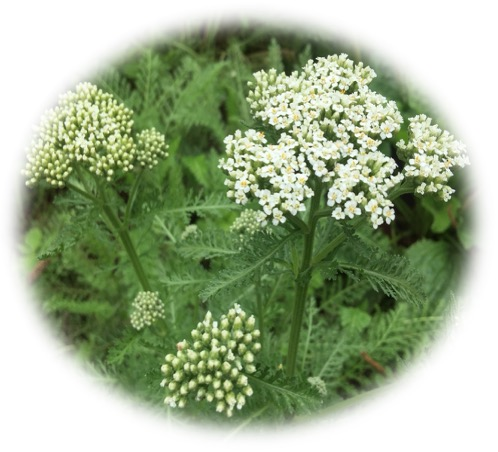
Achillea millefolium
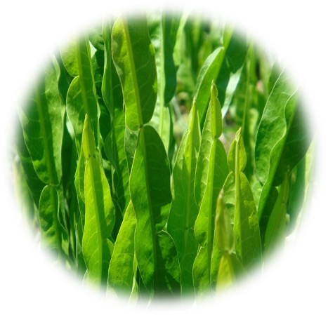
Baccharis trimera
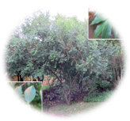
Casearia sylvestris
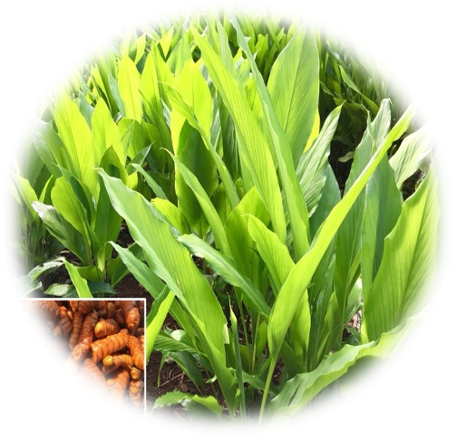
Curcuma longa
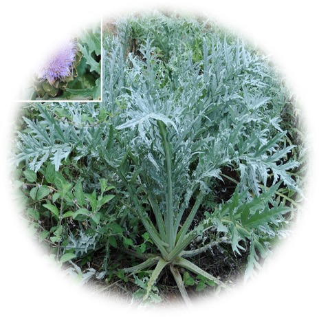
Cynara scolymus
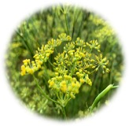
Foeniculum vulgare
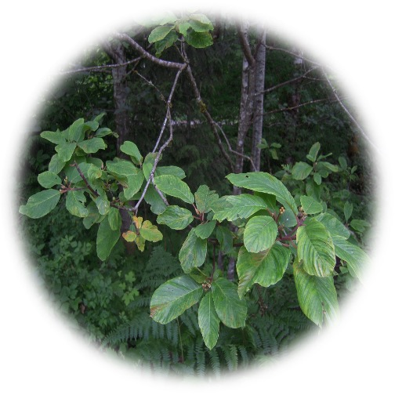
Frangula purshiana
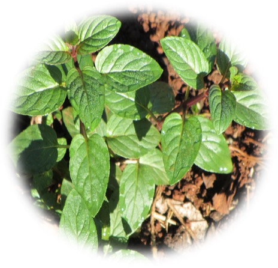
Mentha piperita
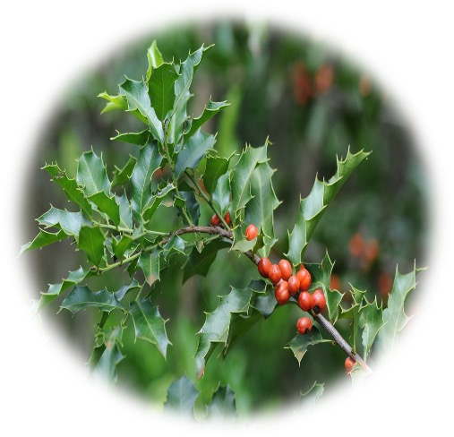
Monteverdia spp.
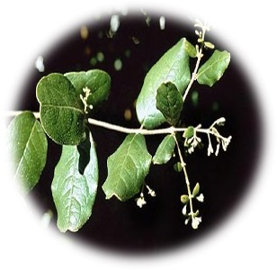
Peumus boldus
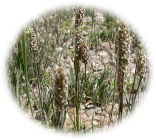
Plantago ovata e Plantago indica
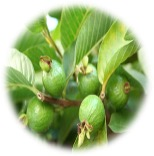
Psidium guajava
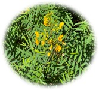
Senna alexandrina
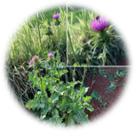
Silybum marianum
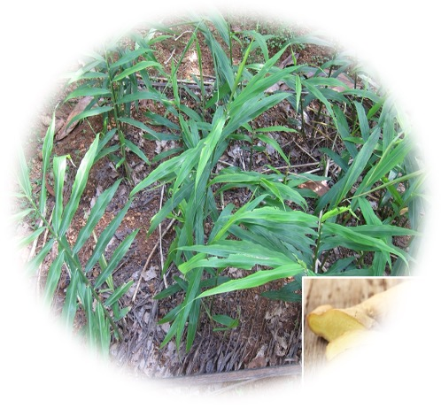
Zingiber officinale
Clique sobre os títulos
Achillea millefolium
Informações gerais
Informações clínicas
Apresentações, Posologia e Advertências
Referências
VOLTAR AO MENU
INFORMAÇÕES GERAIS
Espécie (Família)
Achillea millefolium L. (Asteraceae)1, 2.
Principais nomes populares
Mil-folhas, mil-em-rama, milefólio-em-rama, milefólio, erva-dos-carpinteiros, feiteirinha,
erva-dos-carreteiros, novalgina, pronto-alívio1.
Principais sinonímias
Achillea albida Willd., Achillea alpicola (Rydb.) Rydb., Achillea dentifera DC.,
Achillea tenuifolia Salisb., Alitubus millefolium (L.) Dulac, Chamaemelum
millefolium (L.) E.H.L.Krause e Santolina millefolium (L.) Baill.2.
Partes utilizadas
Partes aéreas3–5 ou partes aéreas floridas6.
Principais constituintes químicos
Óleos essenciais/voláteis (até 1%), lactonas sesquiterpênicas, alcamidas, flavonoides, betaína e ácidos
orgânicos (cafeico, clorogênico, salicílico)7.

INFORMAÇÕES CLÍNICAS
Principais indicações
Queixas gastrointestinais como dispepsia, flatulência, cólicas, processos inflamatórios3,6,8
e inapetência.
Outras indicações
Dismenorreia primária9,10, como cicatrizante em episiotomia11 e mucosite
oral12, e para hemorroidas13.
Ações farmacológicas
Ensaios clínicos
Ensaios clínicos têm demonstrado a eficácia de A. millefolium no tratamento de dismenorreia primária,
mucosite orofaríngea, hemorroidas e como cicatrizante.
Publicações oficiais
APRESENTAÇÕES E POSOLOGIA
* 0,5 g de folhas e inflorescências secas íntegras corresponde aproximadamente a uma colher de sopa caseira cheia (Figura 1).
Figura 1. Preparo do infuso de Achillea millefolium.
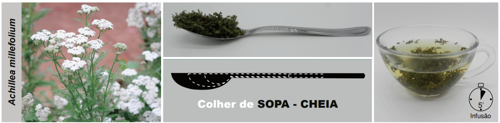
Fonte: PEREIRA, A.M.S. et al.; 20205.
Duração do uso
Para sintomas gastrointestinais deve ser usada continuamente por até duas semanas. Para outras
indicações, pode ser usada continuamente no máximo por 2 ou 3 meses, com intervalos mínimos de 15
dias4,5.
Apresentações comerciais
Apresentações industrializadas registradas na ANVISA podem ser consultadas no endereço a seguir: https://consultas.anvisa.gov.br/#/medicamentos/.
Advertências
Contraindicado para gestantes, lactantes, crianças menores de 3 anos e portadores de úlceras
gastroduodenais ou doenças biliares. Aumenta a secreção de suco gástrico. Pode causar dermatite, pela
presença de lactonas sesquiterpênicas, em até 50% dos pacientes, especialmente. Doses elevadas podem
provocar alergias, náuseas, vertigens, cefaleias e diminuir o limiar convulsivo (tuiona). Evitar o uso
em pessoas alérgicas ou com hipersensibilidade a plantas da família Asteraceae3. O
contato
direto com a droga vegetal ou suas preparações pode causar reações de hipersensibilidade da pele ou
mucosa, como erupção cutânea, formação de vesículas e prurido, em indivíduos sensíveis27.
Pode
potencializar a ação dos anticoagulantes e hipotensores. Há descrição de interação com omeprazol,
mostrando aumento de alanina aminotransaminase (ALT) plasmática, aspartato aminotransaminase (AST) e
lactato desidrogenase. Nenhuma outra interação medicamentosa importante foi encontrada28.
REFERÊNCIAS BIBLIOGRÁFICAS
1. Lorenzi H, Matos FJA. Plantas Medicinais no Brasil: Nativas e Exóticas. Nova Odessa: Instituto Plantarum; 2008.
2. POWO. Plants of the World Online. Facilitated by the Royal Botanic Gardens, Kew. Published on the Internet [Internet]. 2023 [citado 25 de dezembro de 2023]. Disponível em: http://www.plantsoftheworldonline.org/.
3. Brasil. Formulário de Fitoterápicos da Farmacopeia Brasileira. 2a. Brasília: Agência Nacional de Vigilância Sanitária (ANVISA); 2021. 223 p.
4. Pereira AMS, Bertoni BW, Silva CCM, Ferro D, Carmona F, Cestari IM, et al. Formulário Fitoterápico da Farmácia da Natureza. 3a. São Paulo: Bertolucci; 2020. 465 p.
5. Pereira AMS, Bertoni BW, Silva CCM, Ferro D, Carmona F, Tardelli FC, et al. Formulário de Preparação Extemporânea da Farmácia da Natureza. 2a. São Paulo: Bertolucci; 2020. 263 p.
6. WHO. WHO Monographs on selected medicinal plants (Volume 4). 1st ed. Vol. 4. Geneva: World Health Organization; 2009. 456 p.
7. Gruenwald J, Brendler T, Jaenicke C. Physician’s Desk Reference (PDR) for Herbal Medicines. 4th ed. Connecticut: Thomson; 2007. 1034 p.
8. EMA. Community herbal monograph on Achillea millefolium L., herba [Internet]. 2011 [citado 28 de fevereiro de 2017]. Disponível em: http://www.ema.europa.eu/docs/en_GB/document_library/Herbal_-_Community_herbal_monograph/2011/09/WC500115470.pdf.
9. Jenabi E, Fereidoony B. Effect of Achillea Millefolium on Relief of Primary Dysmenorrhea: A Double-Blind Randomized Clinical Trial. J Pediatr Adolesc Gynecol [Internet]. 2015;28(5):402–4. Disponível em: http://dx.doi.org/10.1016/j.jpag.2014.12.008.
10. Blumenthal M. The Complete German Commission E Monographs: Therapeutic Guide to Herbal Medicines. 1st ed. Massachusetts: American Botanical Council; 1998.
11. Hajhashemi M, Ghanbari Z, Movahedi M, Rafieian M, Keivani A, Haghollahi F. The effect of Achillea millefolium and Hypericum perforatum ointments on episiotomy wound healing in primiparous women. The Journal of Maternal-Fetal & Neonatal Medicine [Internet]. 2 de janeiro de 2018;31(1):63–9. Disponível em: https://www.tandfonline.com/doi/full/10.1080/14767058.2016.1275549.
12. Miranzadeh S, Adib-Hajbaghery M, Soleymanpoor L, Ehsani M. Effect of adding the herb Achillea millefolium on mouthwash on chemotherapy induced oral mucositis in cancer patients: A double-blind randomized controlled trial. European Journal of Oncology Nursing [Internet]. junho de 2015;19(3):207–13. Disponível em: https://linkinghub.elsevier.com/retrieve/pii/S1462388914001999.
13. Mahmoudi A, Seyedsadeghi M, Miran M, Ahari SS, Layegh H, Mostafalou S. Therapeutic effect of Achillea millefolium on the hemorrhoids; A randomized double-blind placebo-controlled clinical trial. J Herb Med. junho de 2023;39:100657.
14. Gadgoli C, Mishra SH. Preliminary screening of Achillea millefolium, Cichorium intybus and Capparis spinosa for antihepatotoxic activity. Fitoterapia. 1995;66(4):319–23.
15. Goldberg AS, Mueller EC, Eigen E, Desalva SJ. Isolation of the Anti-Inflammatory Principles from Achillea millefolium (Compositae). J Pharm Sci [Internet]. agosto de 1969;58(8):938–41. Disponível em: https://linkinghub.elsevier.com/retrieve/pii/S0022354915369537.
16. Pain S, Altobelli C, Boher A, Cittadini L, Favre-Mercuret M, Gaillard C, et al. Surface rejuvenating effect of Achillea millefolium extract. Int J Cosmet Sci [Internet]. dezembro de 2011;33(6):535–42. Disponível em: http://doi.wiley.com/10.1111/j.1468-2494.2011.00667.x.
17. Pirbalouti AG, Koohpayeh A, Karimi I. The wound healing activity of flower extracts of Punica granatum and Achillea kellalensis in Wistar rats. Acta Pol Pharm [Internet]. janeiro de 2010 [citado 10 de julho de 2015];67(1):107–10. Disponível em: http://www.ncbi.nlm.nih.gov/pubmed/20210088.
18. Akkol EK, Koca U, Pesin I, Yilmazer D. Evaluation of the Wound Healing Potential of Achillea biebersteinii Afan. (Asteraceae) by In Vivo Excision and Incision Models. Evid Based Complement Alternat Med [Internet]. janeiro de 2011 [citado 10 de julho de 2015];2011:474026. Disponível em: http://www.pubmedcentral.nih.gov/articlerender.fcgi?artid=3136533&tool=pmcentrez&rendertype=abstract.
19. Bader A, Martini F, Schinella GR, Rios JL, Prieto JM. Modulation of Cox-1, 5-, 12- and 15-Lox by popular herbal remedies used in southern Italy against psoriasis and other skin diseases. Phytother Res [Internet]. janeiro de 2015 [citado 10 de julho de 2015];29(1):108–13. Disponível em: http://www.pubmedcentral.nih.gov/articlerender.fcgi?artid=4303945&tool=pmcentrez&rendertype=abstract.
20. Borrelli F, Romano B, Fasolino I, Tagliatatela-Scafati O, Aprea G, Capasso R, et al. Prokinetic effect of a standardized yarrow (Achillea millefolium) extract and its constituent choline: studies in the mouse and human stomach. Neurogastroenterol Motil [Internet]. fevereiro de 2012;24(2):164–71, e90. Disponível em: http://www.ncbi.nlm.nih.gov/pubmed/22151891.
21. Cavalcanti AM, Baggio CH, Freitas CS, Rieck L, de Sousa RS, Da Silva-Santos JE, et al. Safety and antiulcer efficacy studies of Achillea millefolium L. after chronic treatment in Wistar rats. J Ethnopharmacol [Internet]. 19 de setembro de 2006;107(2):277–84. Disponível em: http://www.ncbi.nlm.nih.gov/pubmed/16647233.
22. Potrich FB, Allemand A, da Silva LM, Dos Santos AC, Baggio CH, Freitas CS, et al. Antiulcerogenic activity of hydroalcoholic extract of Achillea millefolium L.: involvement of the antioxidant system. J Ethnopharmacol [Internet]. 6 de julho de 2010;130(1):85–92. Disponível em: http://www.ncbi.nlm.nih.gov/pubmed/20420892.
23. Basirat E, Karimifard M, Ayoobi F, Jamali Z, Sadeghi T. The effect of Achillea millefolium a widely used plant in Persian Medicine on hemoglobin glycosylate and neuropathy symptoms in type 2 diabetic patients: A randomized clinical trial. Journal of Medicinal Plants. 1o de julho de 2025;24(94):46–58.
24. Abbasifard M, Bazmandegan G, Ayoobi F, Najmaddini P, Kamiab Z. The effects of topical Achillea millefolium oil in patients with knee osteoarthritis: A randomized double-blind active-controlled clinical trial. Journal of Biologically Active Products from Nature. 4 de março de 2025;15(2):107–20.
25. Lotfi UB, Lashgari Kalat H, Ahmadi A, Irani M, Sharififar F, Abdollahi M, et al. Comparative Study on the Effect of Achillea millefolium Extract and Counselling with a Mindfulness-Based Cognitive Therapy Approach on the Quality of Life of Postmenopausal Women. Journal of Mazandaran University of Medical Sciences. 2025;35(244):91–103.
26. Daneshvar-Ghahfarokhi S, Ahmadinia H, Sadeghi T, Basirat E, Mohammadi-Shahrokhi V. Achillea millefolium capsule improved liver enzymes and lipid profile compared to placebo in patients with type 2 diabetes: a double-blind randomized clinical trial. BMC Nutr. 24 de janeiro de 2025;11(1):21.
27. Saad G de A, Léda PH de O, Sá IM, Seixlack AC de C. Fitoterapia Contemporânea - Tradição e Ciência na Prática Clínica. 3. ed. Rio de Janeiro: Guanabara Koogan; 2021. 1–578 p.
28. Williamsom E, Driver S, Baxter K. Interações Medicamentosas de Stockley: plantas medicinais e medicamentos fitoterápicos. Porto Alegre: Artmed; 2012. 440 p.
Clique sobre os títulos
Baccharis trimera
Informações gerais
Informações clínicas
Apresentações, Posologia e Advertências
Referências
VOLTAR AO MENU
INFORMAÇÕES GERAIS
Espécie (Família)
Baccharis trimera (Less.) DC. (Asteraceae)1, 2.
Principais nomes populares
Carqueja, carqueja-amargosa, alecrim-do-mato1.
Principais sinonímias
Baccharis genistelloides var. trimera (Less.) Baker e Molina trimera
Less2.
Baccharis genistelloides (Lam.) Pers. costumava ser considerado sinônimo, por isto algumas
monografias
também a citam, mas hoje admite-se que é uma espécie diferente.
Partes utilizadas
Partes aéreas.
Principais constituintes químicos
Óleos voláteis/essenciais (carquejol, cariofileno, nopineno, calameno, eudesmol), flavonoides
(apigenina,
luteolina, hispidulina, quercetina, lupeol, kaempferol), lactonas diterpênicas, saponinas, resinas e
polifenóis3.
INFORMAÇÕES CLÍNICAS
Principais indicações
Dispepsia4, doença péptica5, constipação intestinal5.
Outras indicações
Diabetes mellitus tipo 2, hipolipemiante, hepatoprotetor, anti-inflamatório e como anti-inflamatório
para
lombalgia crônica6,7.
Ações farmacológicas
Ensaios clínicos
Não foram encontrados dados na literatura.
Publicações oficiais
APRESENTAÇÕES E POSOLOGIA
* 0,25 g de partes aéreas secas rasuradas corresponde aproximadamente a uma colher de chá caseira cheia (Figura 1).
Figura 1. Preparo do decocto de Baccharis trimera.
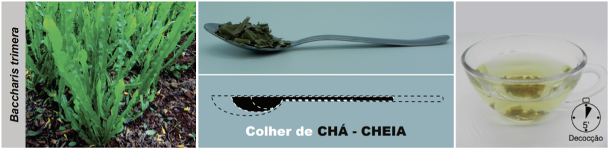
Fonte: PEREIRA, A.M.S. et al.; 20207.
Duração do uso
O uso da tintura deve ser restrito, no máximo, a duas semanas4. Deve ter o uso interrompido
duas semanas antes de cirurgias. Doses excessivas e prolongadas (maiores que 3 meses) podem provocar
leucopenia6,7.
Apresentações comerciais
Apresentações industrializadas registradas na ANVISA podem ser consultadas no endereço a seguir:
https://consultas.anvisa.gov.br/#/medicamentos/.
Advertências
Contraindicada para gestantes, lactantes e crianças menores de 12 anos. Pode causar hipotensão e pode
potencializar os efeitos de medicamentos para hipertensão arterial e diabetes6,7. Foram
relatados casos de hipoglicemia mesmo em pessoas normoglicêmicas. Pode causar hipersensibilização,
hipotensão arterial, distúrbios digestivos, quando em uso prolongado, assim como em doses elevadas ou em
pessoas hipersensíveis. Foi demonstrada toxicidade renal e hepática em ratas grávidas18.
Referências bibliográficas
1. Lorenzi H, Matos FJA. Plantas Medicinais no Brasil: Nativas e Exóticas. Nova Odessa: Instituto Plantarum; 2008.
2. POWO. Plants of the World Online. Facilitated by the Royal Botanic Gardens, Kew. Published on the Internet [Internet]. 2023 [citado 25 de dezembro de 2023]. Disponível em: http://www.plantsoftheworldonline.org/.
3. Pereira AMS, Bertoni BW, Jorge CR, Ferro D, Carmona F, Morel LJ de F, et al. Manual prático de multiplicação e colheita de plantas medicinais. São Paulo: Bertolucci; 2010. 280 p.
4. Brasil. Formulário de Fitoterápicos da Farmacopeia Brasileira. 2. ed. Brasília: Agência Nacional de Vigilância Sanitária (ANVISA); 2021. 223 p.
5. Saad G de A, Léda PH de O, Sá IM, Seixlack AC de C. Fitoterapia Contemporânea - Tradição e Ciência na Prática Clínica. 3a edição. Rio de Janeiro: Guanabara Koogan; 2021. 1–578 p.
6. Pereira AMS, Bertoni BW, Silva CCM, Ferro D, Carmona F, Cestari IM, et al. Formulário Fitoterápico da Farmácia da Natureza. 3. ed. São Paulo: Bertolucci; 2020. 465 p.
7. Pereira AMS, Bertoni BW, Silva CCM, Ferro D, Carmona F, Tardelli FC, et al. Formulário de Preparação Extemporânea da Farmácia da Natureza. 2. ed. São Paulo: Bertolucci; 2020. 263 p.
8. Biondo TMA, Tanae MM, Coletta E Della, Lima-Landman MTR, Lapa AJ, Souccar C. Antisecretory actions of Baccharis trimera (Less.) DC aqueous extract and isolated compounds: Analysis of underlying mechanisms. J Ethnopharmacol. junho de 2011;136(2):368–73.
9. Ramos Campos F, Bressan J, Godoy Jasinski VC, Zuccolotto T, Da Silva LE, Bonancio Cerqueira L. Baccharis (Asteraceae): Chemical Constituents and Biological Activities. Chem Biodivers. 2016;13(1):1–17.
10. Souza S, Pereira L. Inhibition of pancreatic lipase by extracts of Baccharis trimera (Less.) DC., Asteraceae: evaluation of antinutrients and effect on glycosidases. Revista Brasileira de … [Internet]. 2011 [citado 23 de setembro de 2014];21(3):450–5. Disponível em: http://www.scielo.br/scielo.php?pid=S0102-695X2011000300016&script=sci_arttext.
11. Barbosa RJ, Ratti da Silva G, Cola IM, Kuchler JC, Coelho N, Barboza LN, et al. Promising therapeutic use of Baccharis trimera (less.) DC. as a natural hepatoprotective agent against hepatic lesions that are caused by multiple risk factors. J Ethnopharmacol. maio de 2020;254:112729.
12. Lívero FA dos R, Martins GG, Queiroz Telles JE, Beltrame OC, Petris Biscaia SM, Cavicchiolo Franco CR, et al. Hydroethanolic extract of Baccharis trimera ameliorates alcoholic fatty liver disease in mice. Chem Biol Interact. dezembro de 2016;260:22–32.
13. Pádua B da C, Rossoni Júnior JV, de Brito Magalhães CL, Chaves MM, Silva ME, Pedrosa ML, et al. Protective Effect of Baccharis trimera Extract on Acute Hepatic Injury in a Model of Inflammation Induced by Acetaminophen. Mediators Inflamm. 2014;2014:1–14.
14. De Oliveira CB, Comunello LN, Lunardelli A, Amaral RH, Pires MGS, Da Silva GL, et al. Phenolic enriched extract of Baccharis trimera presents anti-inflammatory and antioxidant activities. Molecules [Internet]. 2012;17(12):1113–23. Disponível em: http://www.mdpi.com/1420-3049/17/1/1113/.
15. Souza S de, Pereira L, Souza A. Estudo da atividade antiobesidade do extrato metanólico de Baccharis trimera (Less.) DC. Rev Bras … [Internet]. 2012 [citado 30 de dezembro de 2014];93(1):27–32. Disponível em: http://www.rbfarma.org.br/files/rbf-2012-93-1-5.pdf.
16. Oliveira ACP, Endringer DC, Amorim LAS, das Graças L Brandão M, Coelho MM. Effect of the extracts and fractions of Baccharis trimera and Syzygium cumini on glycaemia of diabetic and non-diabetic mice. J Ethnopharmacol [Internet]. 2005;102(3):465–9. Disponível em: http://www.ncbi.nlm.nih.gov/pubmed/16055289
17. De Souza Marinho do Nascimento D, Oliveira R, Camara R, Gomes D, Monte J, Costa M, et al. Baccharis trimera (Less.) DC Exhibits an Anti-Adipogenic Effect by Inhibiting the Expression of Proteins Involved in Adipocyte Differentiation. Molecules [Internet]. 12 de junho de 2017;22(6):972. Disponível em: http://www.mdpi.com/1420-3049/22/6/972.
18. Grance SRM, Teixeira MA, Leite RS, Guimarães EB, de Siqueira JM, de Oliveira Filiu WF, et al. Baccharis trimera: Effect on hematological and biochemical parameters and hepatorenal evaluation in pregnant rats. J Ethnopharmacol. abril de 2008;117(1):28–33.
Clique sobre os títulos
Casearia sylvestris
Informações gerais
Informações clínicas
Apresentações, Posologia e Advertências
Referências
VOLTAR AO MENU
INFORMAÇÕES GERAIS
Espécie (Família)
Casearia sylvestris Sw. (Salicaceae)1, 2.
Principais nomes populares
Guaçatonga, vassitonga, guaçutuga, guaçatunga, pau-de-lagarto, erva-de-lagarto e
chá-de-bugre1.
Principais sinonímias
Guidonia sylvestris (Sw.) M.Gómez, Samyda sylvestris (Sw.) Poir., Anavinga samyda
C.F.Gaerton., Casearia affinis Gardner, Casearia attenuata Rusby, Casearia
benthamiana
Miq., Casearia caudata Uittien2.
Partes utilizadas
Folhas.
Principais constituintes químicos
Óleos voláteis/essenciais (triterpenos e sesquiterpenos: (E)-cariofileno, α-humuleno, germacreno D,
biciclogermacreno, espatulenol, óxido de cariofileno), cumarinas, saponinas, antocianosídeos, compostos
fenólicos principalmente do grupo dos flavonoides e taninos e compostos terpênicos, tendo relevância os
diterpenos de esqueleto clerodano3.
INFORMAÇÕES CLÍNICAS
Principais indicações
Processos inflamatórios4,5, como antidispéptico6, na síndrome do intestino
irritável, herpes labial e genital.
Outras indicações
Infecções virais4,5, síndrome da tensão pré-menstrual e edemas por retenção
hídrica4,5.
Ações farmacológicas
Ensaios clínicos
Não foram encontrados.
Publicações oficiais
APRESENTAÇÕES E POSOLOGIA
* 0,5 g de folhas secas rasuradas corresponde aproximadamente a meia colher de sopa caseira (Figura 1).
Figura 1. Preparo do infuso de Casearia sylvestris.
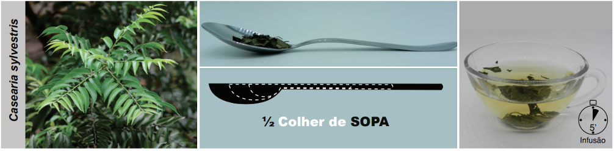
Fonte: PEREIRA, A.M.S. et al.; 20205.
Duração do uso
Usar por, no máximo, 20 dias consecutivos4,5, ou não mais do que três meses para evitar
acidentes hemorrágicos10.
Apresentações comerciais
Apresentações industrializadas registradas na ANVISA podem ser consultadas no endereço a seguir: https://consultas.anvisa.gov.br/#/medicamentos/.
Advertências
Contraindicado o uso oral para gestantes, lactantes6 e crianças menores de 12 anos. Por ser
antagonista da vitamina K, o uso prolongado pode provocar hemorragias, além de potencializar a ação dos
anticoagulantes, dificultando o controle das dosagens. Não foram encontrados dados na literatura sobre
toxicidade4,5.
Referências bibliográficas
1. Lorenzi H, Matos FJA. Plantas Medicinais no Brasil: Nativas e Exóticas. Nova Odessa: Instituto Plantarum; 2008.
2. POWO. Plants of the World Online. Facilitated by the Royal Botanic Gardens, Kew. Published on the Internet [Internet]. 2023 [citado 25 de dezembro de 2023]. Disponível em: http://www.plantsoftheworldonline.org/.
3. Pereira AMS, Bertoni BW, Jorge CR, Ferro D, Carmona F, Morel LJ de F, et al. Manual prático de multiplicação e colheita de plantas medicinais. São Paulo: Bertolucci; 2010. 280 p.
4. Pereira AMS, Bertoni BW, Silva CCM, Ferro D, Carmona F, Cestari IM, et al. Formulário Fitoterápico da Farmácia da Natureza. 3. ed. São Paulo: Bertolucci; 2020. 465 p.
5. Pereira AMS, Bertoni BW, Silva CCM, Ferro D, Carmona F, Tardelli FC, et al. Formulário de Preparação Extemporânea da Farmácia da Natureza. 2. ed. São Paulo: Bertolucci; 2020. 263 p.
6. Brasil. Formulário de Fitoterápicos da Farmacopeia Brasileira. 2. ed. Brasília: Agência Nacional de Vigilância Sanitária (ANVISA); 2021. 223 p.
7. Sertié JAA, Carvalho JCT, Panizza S. Antiulcer Activity of the Crude Extract from the Leaves of Casearia Sylvestris. Pharm Biol. 10 de abril de 2000;38(2):112–9.
8. Spósito L, Oda FB, Vieira JH, Carvalho FA, dos Santos Ramos MA, de Castro RC, et al. In vitro and in vivo anti-Helicobacter pylori activity of Casearia sylvestris leaf derivatives. J Ethnopharmacol. abril de 2019;233:1–12.
9. Alonso J. Tratado de Fitofármacos e Nutracêuticos. São Paulo: AC Farmacêutica; 2015. 1124 p.
10. Saad G de A, Léda PH de O, Sá IM, Seixlack AC de C. Fitoterapia Contemporânea - Tradição e Ciência na Prática Clínica. 3. ed. Rio de Janeiro: Guanabara Koogan; 2021. 1–578 p.
Clique sobre os títulos
Cynara scolymus
Informações gerais
Informações clínicas
Apresentações, Posologia e Advertências
Referências
VOLTAR AO MENU
INFORMAÇÕES GERAIS
Espécie (Família)
Cynara scolymus L. (Asteraceae)1, 2.
Principais nomes populares
Alcachofra, alcachofra-de-comer, alcachofra-comum, cachofra1.
Principais sinonímias
Cynara cardunculus L., Cynara cardunculus subsp. scolymus (L.) Hegi, e Cynara
scolymus subsp. cardunculus (L.) Bonnier & Layens2.
Partes utilizadas
Folhas.
Principais constituintes químicos
Ácidos fenólicos [(>2%) ácidos clorogênico e cafeico e cinarina], lactonas sesquiterpênicas amargas
(cinaropicrina), flavonoides (cinarosídeo, escolimosídeo, apigenina, rutina, hesperidina, quercetina),
fitosterois, açúcares, inulina, enzimas, potássio e óleo essencial constituído principalmente de
β-selineno, eugenol e cariofileno3.
INFORMAÇÕES CLÍNICAS
Principais indicações
Nas afecções hepáticas e dislipidemias, esteatose hepática18, como colagogo e colerético,
antidispéptico, antiflatulento, antiemético, laxativo, diurético, e como auxiliar nos sintomas da
síndrome do intestino irritável4, 5. Edemas e ateroesclerose4, 5. Como coadjuvante
no
diabetes mellitus tipo 26.
Ações farmacológicas
Ensaios clínicos
Ensaios clínicos e revisões sistemáticas com meta-análises têm confirmado a eficácia de C.
scolymus no
tratamento de dislipidemia, doença hepática gordurosa não alcoólica (esteatose hepática), diabetes
mellitus, hipertensão arterial, dispepsia e síndrome do intestino irritável.
Publicações oficiais
APRESENTAÇÕES E POSOLOGIA
*0,5 g de folhas secas pulverizadas corresponde aproximadamente a uma colher de chá caseira rasa.
Figura 1. Preparo do infuso de Cynara scolymus.

Fonte: PEREIRA, A.M.S. et al.; 202032.
Duração do uso
Não há dados na literatura.
Apresentações comerciais
Apresentações industrializadas registradas na ANVISA podem ser consultadas no endereço a seguir: https://consultas.anvisa.gov.br/#/medicamentos/.
Advertências
Contraindicado para gestantes, lactantes, crianças menores de 12 anos e portadores de
doenças biliares. Evitar associação com anticoagulantes e o uso em pessoas alérgicas ou com
hipersensibilidade à alcachofra ou plantas da família Asteraceae5,6. Pode potencializar o
efeito de medicamentos hipotensores e cardiotônicos: usar com cautela em hipertensos, devido à ação
diurética, e nos pacientes em tratamento com digitálicos, pela depleção de potássio3. A
presença de lactonas sesquiterpênicas aumenta o risco de hipersensibilidade. Pode ter efeito laxativo e
causar espasmos abdominais. Potenciais interações pode diminuir as concentrações sanguíneas de fármacos
de medicamentos metabolizados pelas CYP3A4, CYP2B6 e CYP2D6 (a exemplo de anticoagulantes), uma vez que
C. scolymus é indutora dessas enzimas. Pode potencializar o efeito de diuréticos de alça
(furosemida)
ou tiazídicos (clortalidona, hidroclorotiazida, indapamida)3. Não há relatos de toxicidade na
literatura mesmo em doses elevadas6,35.
REFERÊNCIAS BIBLIOGRÁFICAS
1. Lorenzi H, Matos FJA. Plantas Medicinais no Brasil: Nativas e Exóticas. Nova Odessa: Instituto Plantarum; 2008.
2. POWO. Plants of the World Online. Facilitated by the Royal Botanic Gardens, Kew. Published on the Internet [Internet]. 2023 [citado 25 de dezembro de 2023]. Disponível em: http://www.plantsoftheworldonline.org/.
3. Saad G de A, Léda PH de O, Sá IM, Seixlack AC de C. Fitoterapia Contemporânea - Tradição e Ciência na Prática Clínica. 3. ed. Rio de Janeiro: Guanabara Koogan; 2021. 1–578 p.
4. Brasil. Memento Fitoterápico da Farmacopeia Brasileira. 1. ed. Brasília: Agência Nacional de Vigilância Sanitária (ANVISA); 2016. 115 p.
5. Brasil. Formulário de Fitoterápicos da Farmacopeia Brasileira. 2. ed. Brasília: Agência Nacional de Vigilância Sanitária (ANVISA); 2021. 223 p.
6. Fantini N, Colombo G, Giori A, Riva A, Morazzoni P, Bombardelli E, et al. Evidence of glycemia-lowering effect by a Cynara scolymus L. extract in normal and obese rats. Phytotherapy Research [Internet]. 25 de agosto de 2010 [citado 23 de setembro de 2014];466(July 2010):n/a-n/a. Disponível em: http://onlinelibrary.wiley.com/doi/10.1002/ptr.3285/full.
7. WHO. WHO Monographs on selected medicinal plants (Volume 4). 1st ed. Vol. 4. Geneva: World Health Organization; 2009. 456 p.
8. Shimoda H, Ninomiya K, Nishida N, Yoshino T, Morikawa T, Matsuda H, et al. Anti-hyperlipidemic sesquiterpenes and new sesquiterpene glycosides from the leaves of artichoke (Cynara scolymus L.): structure requirement and mode of action. Bioorg Med Chem Lett [Internet]. 20 de janeiro de 2003;13(2):223–8. Disponível em: http://www.ncbi.nlm.nih.gov/pubmed/12482428.
9. Shahinfar H, Bazshahi E, Amini MR, Payandeh N, Pourreza S, Noruzi Z, et al. Effects of artichoke leaf extract supplementation or artichoke juice consumption on lipid profile: A systematic review and dose–response meta‐analysis of randomized controlled trials. Phytotherapy Research. 27 de dezembro de 2021;35(12):6607–23.
10. Salekzamani S, Ebrahimi‐Mameghani M, Rezazadeh K. The antioxidant activity of artichoke (Cynara scolymus): A systematic review and meta‐analysis of animal studies. Phytotherapy Research. 22 de janeiro de 2019;33(1):55–71.
11. Petrowicz O, Gebhardt R, Donner M, Schwandt P, Kraft K. Effects of artichoke leaf extract (ALE) on lipoprotein metabolism in vitro and in vivo. Atherosclerosis. 1997;129(1):147.
12. Englisch W, Beckers C, Unkauf M, Ruepp M, Zinserling V. Efficacy of Artichoke dry extract in patients with hyperlipoproteinemia. Arzneimittelforschung [Internet]. março de 2000;50(3):260–5. Disponível em: http://www.ncbi.nlm.nih.gov/pubmed/10758778.
13. Cicero AFG, Fogacci F, Tocci G, D’Addato S, Grandi E, Banach M, et al. Three arms, double-blind, non-inferiority, randomized clinical study testing the lipid-lowering effect of a novel dietary supplement containing red yeast rice and artichoke extracts compared to Armolipid Plus® and placebo. Archives of Medical Science. 1o de setembro de 2023;19(5):1169–79.
14. Fogacci F, Rizzoli E, Giovannini M, Bove M, D’Addato S, Borghi C, et al. Effect of Dietary Supplementation with Eufortyn® Colesterolo Plus on Serum Lipids, Endothelial Reactivity, Indexes of Non-Alcoholic Fatty Liver Disease and Systemic Inflammation in Healthy Subjects with Polygenic Hypercholesterolemia: The ANEMONE Study. Nutrients. 18 de maio de 2022;14(10):2099.
15. Kamel AM, Farag MA. Therapeutic Potential of Artichoke in the Treatment of Fatty Liver: A Systematic Review and Meta-Analysis. J Med Food. 28 de junho de 2022;
16. Moradi S, Shokri‐Mashhadi N, Saraf‐Bank S, Mohammadi H, Zobeiri M, Clark CCT, et al. The effects of Cynara scolymus L. supplementation on liver enzymes: A systematic review and meta‐analysis. Int J Clin Pract. 23 de novembro de 2021;75(11).
17. Panahi Y, Kianpour P, Mohtashami R, Atkin SL, Butler AE, Jafari R, et al. Efficacy of artichoke leaf extract in non‐alcoholic fatty liver disease: A pilot double‐blind randomized controlled trial. Phytotherapy Research. 9 de julho de 2018;32(7):1382–7.
18. Rangboo V, Noroozi M, Zavoshy R, Rezadoost SA, Mohammadpoorasl A. The Effect of Artichoke Leaf Extract on Alanine Aminotransferase and Aspartate Aminotransferase in the Patients with Nonalcoholic Steatohepatitis. Int J Hepatol. 2016;2016:1–6.
19. Jafari A, Karimi MA, Mahmoudinezhad M, Razavi F, Mardani H, Musazadeh V. Artichoke and cardiometabolic health: A systematic and meta-analytic synthesis of current evidence. Diabetes & Metabolic Syndrome: Clinical Research & Reviews. outubro de 2025;19(10):103328.
20. Phimarn W, Sungthong B, Wichiyo K. Effect of Cynara scolymus L. on Cardiometabolic Outcomes: An Updated Meta-analysis of Randomized Controlled Trials and Meta-regression. Pharmacogn Mag. 12 de junho de 2024;20(2):372–88.
21. Jalili C, Moradi S, Babaei A, Boozari B, Asbaghi O, Lazaridi AV, et al. Effects of Cynara scolymus L. on glycemic indices:A systematic review and meta-analysis of randomized clinical trials. Complement Ther Med. agosto de 2020;52:102496.
22. Ardalani H, Jandaghi P, Meraji A, Hassanpour Moghadam M. The Effect of Cynara scolymus on Blood Pressure and BMI in Hypertensive Patients: A Randomized, Double-Blind, Placebo-Controlled, Clinical Trial. Complement Med Res. 2020;27(1):40–6.
23. Moradi M, Sohrabi G, Golbidi M, Yarmohammadi S, Hemati N, Campbell MS, et al. Effects of artichoke on blood pressure: A systematic review and meta-analysis. Complement Ther Med. março de 2021;57:102668.
24. Kraft K. Artichoke leaf extract - Recent findings reflecting effects on lipid metabolism, liver and gastrointestinal tracts. Phytomedicine [Internet]. dezembro de 1997;4(4):369–78. Disponível em: http://www.ncbi.nlm.nih.gov/pubmed/23195590.
25. Kirchhoff R, Beckers C, Kirchhoff GM, Trinczek-Gärtner H, Petrowicz O, Reimann HJ. Increase in choleresis by means of artichoke extract. Phytomedicine [Internet]. setembro de 1994;1(2):107–15. Disponível em: http://www.ncbi.nlm.nih.gov/pubmed/23195882.
26. Marakis G, Walker AF, Middleton RW, Booth JCL, Wright J, Pike DJ. Artichoke leaf extract reduces mild dyspepsia in an open study. Phytomedicine [Internet]. dezembro de 2002;9(8):694–9. Disponível em: http://www.ncbi.nlm.nih.gov/pubmed/12587688.
27. Holtmann G, Adam B, Haag S, Collet W, Grünewald E, Windeck T. Efficacy of artichoke leaf extract in the treatment of patients with functional dyspepsia: a six‐week placebo‐controlled, double‐blind, multicentre trial. Aliment Pharmacol Ther. 20 de dezembro de 2003;18(11–12):1099–105.
28. Bundy R, Walker AF, Middleton RW, Marakis G, Booth JCL. Artichoke leaf extract reduces symptoms of irritable bowel syndrome and improves quality of life in otherwise healthy volunteers suffering from concomitant dyspepsia: a subset analysis. J Altern Complement Med [Internet]. agosto de 2004;10(4):667–9. Disponível em: http://www.ncbi.nlm.nih.gov/pubmed/15353023.
29. Giacosa A, Guido D, Grassi M, Riva A, Morazzoni P, Bombardelli E, et al. The Effect of Ginger (Zingiber officinalis) and Artichoke (Cynara cardunculus) Extract Supplementation on Functional Dyspepsia: A Randomised, Double-Blind, and Placebo-Controlled Clinical Trial. Evidence-Based Complementary and Alternative Medicine [Internet]. 2015;2015:915087. Disponível em: http://www.ncbi.nlm.nih.gov/pubmed/25954317.
30. Brasil. Relação Nacional de Medicamentos Essenciais: Rename 2024. 2. ed. Brasília: Ministério da Saúde, Secretaria de Ciência, Tecnologia, Inovação e Insumos Estratégicos em Saúde, Departamento de Assistência Farmacêutica e Insumos Estratégicos; 2025. 265 p.
31. EMA. Community herbal monograph on Cynara scolymus L., folium [Internet]. 2011 [citado 28 de fevereiro de 2017]. Disponível em: http://www.ema.europa.eu/docs/en_GB/document_library/Herbal_-_Community_herbal_monograph/2011/12/WC500119942.pdf.
32. Pereira AMS, Bertoni BW, Silva CCM, Ferro D, Carmona F, Tardelli FC, et al. Formulário de Preparação Extemporânea da Farmácia da Natureza. 2. ed. São Paulo: Bertolucci; 2020. 263 p.
33. Alonso J. Tratado de Fitofármacos e Nutracêuticos. São Paulo: AC Farmacêutica; 2015. 1124 p.
34. Pereira AMS, Bertoni BW, Silva CCM, Ferro D, Carmona F, Cestari IM, et al. Formulário Fitoterápico da Farmácia da Natureza. 3. ed. São Paulo: Bertolucci; 2020. 465 p.
35. Brasil. Relação Nacional de Medicamentos Essenciais: Rename 2022. Brasília: Ministério da Saúde, Secretaria de Ciência, Tecnologia, Inovação e Insumos Estratégicos em Saúde, Departamento de Assistência Farmacêutica e Insumos Estratégicos; 2022. 181 p.
36. Williamsom E, Driver S, Baxter K. Interações Medicamentosas de Stockley: plantas medicinais e medicamentos fitoterápicos. Porto Alegre: Artmed; 2012. 440 p.
Clique sobre os títulos
Foeniculum vulgare
Informações gerais
Informações clínicas
Apresentações, Posologia e Advertências
Referências
VOLTAR AO MENU
INFORMAÇÕES GERAIS
Espécie (Família)
Foeniculum vulgare Mill. (Apiaceae)1, 2.
Principais nomes populares
Funcho, erva-doce-brasileira, falsa-erva-doce, falso-anis1.
Principais sinonímias
Anethum foeniculum L., Anethum pannorium Roxb., Foeniculum foeniculum (L.) H.
Karst.,
Foeniculum officinale All., Ligusticum foeniculum (L.) Crantz., Meum foeniculum
(L.) Spreng.2.
Partes utilizadas
Frutos secos.
Principais constituintes químicos
Óleo essencial/volátil (trans-anetol, limoneno, pineno etc.), flavonoides, compostos fenólicos,
fitosterois, cumarinas, taninos, ácidos orgânicos e sais minerais3.
INFORMAÇÕES CLÍNICAS
Principais indicações
Flatulência, dispepsia, cólicas4–6, diarreias pastosas e crônicas3, constipação
funcional7, síndrome do intestino irritável8 e retocolite ulcerativa9.
Outras indicações
Infecções das vias aéreas superiores10 e dismenorreia primária11–13.
Ações farmacológicas
Ensaios clínicos
Ensaios clínicos e revisões sistemáticas com meta-análises têm confirmado a eficácia de F.
vulgare no
tratamento de constipação intestinal, síndrome do intestino irritável, retocolite ulcerativa e
dismenorreia.
Publicações oficiais
Formulário de Fitoterápicos da Farmacopeia Brasileira4.
APRESENTAÇÕES E POSOLOGIA
* 1 g de folhas secas rasuradas corresponde aproximadamente a uma colher de sopa caseira rasa e 1 g de fruto seco íntegro corresponde aproximadamente a uma colher de café rasa (Figura 1).
Figura 1. Preparo do infuso de Foeniculum vulgare.
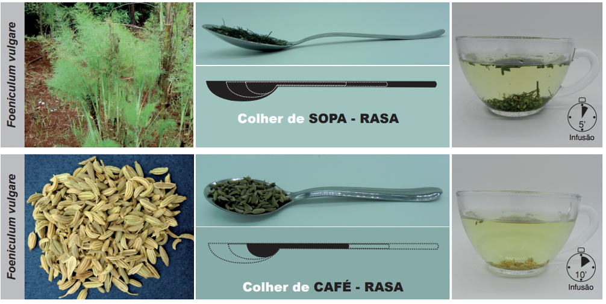
Fonte: PEREIRA, A.M.S. et al.; 20206.
Duração do uso
Não há dados na literatura.
Apresentações comerciais
Apresentações industrializadas registradas na ANVISA podem ser consultadas no endereço a seguir: https://consultas.anvisa.gov.br/#/medicamentos/.
Advertências
Contraindicada para gestantes, lactantes, crianças menores de 4 anos e em casos de hiperestrogenismo ou
hipermenorreia. Evitar o uso em pessoas alérgicas ou com hipersensibilidade ao funcho ou plantas da
família Apiaceae. Não deve ser utilizado em pessoas com histórico de convulsões. Em casos raros podem
aparecer reações alérgicas na pele e no sistema respiratório, tais como asma, dermatite de contato e
rino-conjuntivite. As cumarinas podem provocar fotossensibilização com hiperpigmentação cutânea, deve
ser evitada forte exposição ao sol quando em uso desta planta. O anetol e a miristina podem diminuir o
limiar convulsivo, em doses mais elevadas. É contraindicado o uso prolongado para pessoas com refluxo a
não ser com estrito acompanhamento médico4. Pode haver interação com
ciprofloxacina18.
REFERÊNCIAS BIBLIOGRÁFICAS
1. Lorenzi H, Matos FJA. Plantas Medicinais no Brasil: Nativas e Exóticas. Nova Odessa: Instituto Plantarum; 2008.
2. POWO. Plants of the World Online. Facilitated by the Royal Botanic Gardens, Kew. Published on the Internet [Internet]. 2023 [citado 25 de dezembro de 2023]. Disponível em: http://www.plantsoftheworldonline.org/.
3. WHO. WHO Monographs on selected medicinal plants (Volume 3). 1st ed. Vol. 3. Geneva: World Health Organization; 2007. 390 p.
4. Brasil. Formulário de Fitoterápicos da Farmacopeia Brasileira. 2. ed. Brasília: Agência Nacional de Vigilância Sanitária (ANVISA); 2021. 223 p.
5. Pereira AMS, Bertoni BW, Silva CCM, Ferro D, Carmona F, Cestari IM, et al. Formulário Fitoterápico da Farmácia da Natureza. 3. ed. São Paulo: Bertolucci; 2020. 465 p.
6. Pereira AMS, Bertoni BW, Silva CCM, Ferro D, Carmona F, Tardelli FC, et al. Formulário de Preparação Extemporânea da Farmácia da Natureza. 2. ed. São Paulo: Bertolucci; 2020. 263 p.
7. Azimi M, Niayesh H, Raeiszadeh M, Khodabandeh-shahraki S. Efficacy of the herbal formula of Foeniculum vulgare and Rosa damascena on elderly patients with functional constipation: A double-blind randomized controlled trial. J Integr Med. maio de 2022;20(3):230–6.
8. Portincasa P, Bonfrate L, Scribano M, Kohn A, Caporaso N, Festi D, et al. Curcumin and Fennel Essential Oil Improve Symptoms and Quality of Life in Patients with Irritable Bowel Syndrome. Journal of Gastrointestinal and Liver Diseases. 1o de junho de 2016;25(2):151–7.
9. Mohammadi S, Masoodi M, Sabzikarian M, Talebi A, Mokhtare M, Akbari A, et al. The Efficacy of Cichorium intybus L., Trigonella foenum-graecum L. and Foeniculum vulgare Mill. in Improvement of Ulcerative Colitis Symptoms: A Randomized Clinical Trial. Traditional and Integrative Medicine. 29 de setembro de 2023;
10. Gruenwald J, Brendler T, Jaenicke C. Physician’s Desk Reference (PDR) for Herbal Medicines. 4th ed. Connecticut: Thomson; 2007. 1034 p.
11. Namavar Jahromi B, Tartifizadeh A, Khabnadideh S. Comparison of fennel and mefenamic acid for the treatment of primary dysmenorrhea. Int J Gynaecol Obstet [Internet]. fevereiro de 2003;80(2):153–7. Disponível em: http://www.ncbi.nlm.nih.gov/pubmed/12566188.
12. Bokaie M, Farajkhoda T, Enjezab B, Khoshbin A, Karimi-Zarchi M, Mojgan KZ. Oral fennel (Foeniculum vulgare) drop effect on primary dysmenorrhea: Effectiveness of herbal drug. Iran J Nurs Midwifery Res [Internet]. 2013;18(2):128. Disponível em: http://www.ncbi.nlm.nih.gov/pubmed/23983742.
13. Omidvar S, Esmailzadeh S, Baradaran M, Basirat Z. Effect of fennel on pain intensity in dysmenorrhoea: A placebo-controlled trial. Ayu [Internet]. abril de 2012;33(2):311–3. Disponível em: http://www.ncbi.nlm.nih.gov/pubmed/23559811.
14. Özbek H, Uğraş S, Dülger H, Bayram İ, Tuncer İ, Öztürk G, et al. Hepatoprotective effect of Foeniculum vulgare essential oil. Fitoterapia. abril de 2003;74(3):317–9.
15. Shahrahmani H, Ghazanfarpour M, Shahrahmani N, Abdi F, Sewell RDE, Rafieian-Kopaei M. Effect of fennel on primary dysmenorrhea: a systematic review and meta-analysis. J Complement Integr Med. 29 de junho de 2021;18(2):261–9.
16. Lee HW, Ang L, Lee MS, Alimoradi Z, Kim E. Fennel for Reducing Pain in Primary Dysmenorrhea: A Systematic Review and Meta-Analysis of Randomized Controlled Trials. Nutrients. 10 de novembro de 2020;12(11):3438.
17. Alvarado-Garcia PAA, Soto-Vasquez MR, Rosales-Cerquin LE, Rodrigo-Villanueva EM, Jara-Aguilar DR, Tuesta-Collantes L. Anxiolytic and Antidepressant-like Effects of Foeniculum vulgare Essential Oil. Pharmacognosy Journal. 4 de maio de 2022;14(2):425–31.
18. Saad G de A, Léda PH de O, Sá IM, Seixlack AC de C. Fitoterapia Contemporânea - Tradição e Ciência na Prática Clínica. 3a edição. Rio de Janeiro: Guanabara Koogan; 2021. 1–578 p.
19. Micromedex [Internet]. Fennel. AltMedDex. 2017 [citado 29 de abril de 2017]. Disponível em: http://psbe.ufrn.br/.
19. Alonso J. Tratado de Fitofármacos e Nutracêuticos. São Paulo: AC Farmacêutica; 2015. 1124 p.
Clique sobre os títulos
Mentha piperita
Informações gerais
Informações clínicas
Apresentações, Posologia e Advertências
Referências
VOLTAR AO MENU
INFORMAÇÕES GERAIS
Espécie (Família)
Mentha × piperita L. (Lamiaceae)1, 2.
Principais nomes populares
Hortelã-pimenta e peppermint1.
Principais sinonímias
Mentha citrata Ehrh2.
Partes utilizadas
Folhas e sumidades floridas.
Principais constituintes químicos
Óleos voláteis (até 4%: mentol e mentona em maior proporção), ácido cafeico, flavonoides (12%),
triterpenos, taninos, ácidos fenólicos, ácido rosmarínico, ácido p-cumárico, betaína, colina e
minerais3.
INFORMAÇÕES CLÍNICAS
Principais indicações
Cólicas, dispepsia e flatulência5, diarreia6 e no tratamento sintomático de
síndrome do intestino irritável7.
Ações farmacológicas
Ensaios clínicos
Ensaios clínicos e revisões sistemáticas com meta-análises têm comprovado a eficácia de M.
piperita no
tratamento de náusea e vômito, dispepsia funcional e síndrome do intestino irritável.
Publicações oficiais
APRESENTAÇÕES E POSOLOGIA
* 0,5 g de partes aéreas secas rasuradas corresponde aproximadamente a uma colher de chá caseira cheia (Figura 1).
Figura 1. Preparo do infuso de Mentha × piperita.
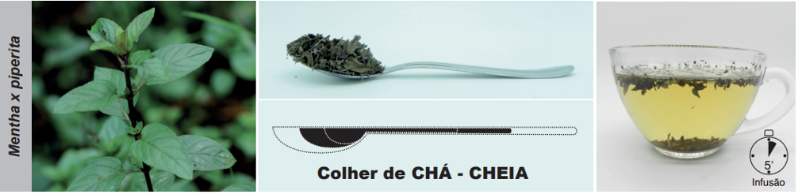
Fonte: PEREIRA, A.M.S. et al.; 202026.
Duração do uso
As cápsulas devem ser tomadas até que os sintomas se resolvam, geralmente duas semanas. Em alguns casos,
quando os sintomas são mais persistentes, seu uso pode ser continuado por períodos superiores a 3 meses
sem interrupção.
Apresentações comerciais
Apresentações industrializadas registradas na ANVISA podem ser consultadas no endereço a seguir: https://consultas.anvisa.gov.br/#/medicamentos/.
Advertências
Medicamento de prescrição exclusivamente médica para síndrome do cólon irritável. Contraindicado para
gestantes, lactantes, crianças menores de 4–5 anos e pacientes com litíase urinária ou biliar, hérnia de
hiato ou refluxo gastroesofágico. Não usar concomitantemente com sinvastatina e da felodipina, pois o
óleo de M. piperita parece aumentar os níveis dessas drogas Pode
potencializar efeitos de inibidores do canal de cálcio e outros hipotensores cronotrópicos negativos. Em
doses elevadas pode levar a lesões hepáticas, nefrite intersticial e insuficiência renal aguda. Efeitos
adversos incluem: ardor perianal, náusea, vômitos, dor abdominal7, insônia8.
Pessoas alérgicas a mentol podem apresentar dor de cabeça, prurido, coriza, asma e arritmias. O óleo
essencial irrita a mucosa ocular8. Em uso tópico, pode aumentar a absorção de medicamentos
pela
pele. O chá contém moléculas semelhantes à digoxina, porém de significado clínico incerto. Pode reduzir
a
absorção de ferro27. Interage com diferentes isoformas do CYP 450. Altas doses de óleo
essencial costuma causar estimulação do sistema nervoso central. Dose de 1 g/kg pode ser
fatal8.
REFERÊNCIAS BIBLIOGRÁFICAS
1. Lorenzi H, Matos FJA. Plantas Medicinais no Brasil: Nativas e Exóticas. Nova Odessa: Instituto Plantarum; 2008.
2. POWO. Plants of the World Online. Facilitated by the Royal Botanic Gardens, Kew. Published on the Internet [Internet]. 2023 [citado 25 de dezembro de 2023]. Disponível em: http://www.plantsoftheworldonline.org/.
3. Pereira AMS, Bertoni BW, Jorge CR, Ferro D, Carmona F, Morel LJ de F, et al. Manual prático de multiplicação e colheita de plantas medicinais. São Paulo: Bertolucci; 2010. 280 p.
4. Brasil. Farmacopeia Brasileira (Volume II – Monografias, Plantas Medicinais). 7. ed. Brasília: Agência Nacional de Vigilância Sanitária (ANVISA); 2019.
5. EMA. Community Herbal Monograph on Mentha x piperita L., Folium [Internet]. 2008 [citado 28 de fevereiro de 2017]. p. 4–8. Disponível em: http://www.ema.europa.eu/docs/en_GB/document_library/Herbal_-_Community_herbal_monograph/2010/01/WC500059393.pdf.
6. WHO. WHO Monographs on selected medicinal plants (Volume 2). 1st ed. Vol. 2. Geneva: World Health Organization; 1999. 357 p.
7. Brasil. Formulário de Fitoterápicos da Farmacopeia Brasileira. 2a. Brasília: Agência Nacional de Vigilância Sanitária (ANVISA); 2021. 223 p.
8. Saad G de A, Léda PH de O, Sá IM, Seixlack AC de C. Fitoterapia Contemporânea - Tradição e Ciência na Prática Clínica. 3. ed. Rio de Janeiro: Guanabara Koogan; 2021. 1–578 p.
9. Goudarzi MA, Radfar M, Goudarzi Z. Peppermint as a promising treatment agent in inflammatory conditions: A comprehensive systematic review of literature. Phytotherapy Research. 18 de janeiro de 2024;38(1):187–95. Disponível em: https://onlinelibrary.wiley.com/doi/10.1002/ptr.8041.
10. Tayarani-Najaran Z, Talasaz-Firoozi E, Nasiri R, Jalali N, Hassanzadeh M. Antiemetic activity of volatile oil from Mentha spicata and Mentha × piperita in chemotherapy-induced nausea and vomiting. Ecancermedicalscience [Internet]. janeiro de 2013 [citado 10 de janeiro de 2015];7:290. Disponível em: http://www.pubmedcentral.nih.gov/articlerender.fcgi?artid=3562057&tool=pmcentrez&rendertype=abstract.
11. Jafarimanesh H, Akbari M, Hoseinian R, Zarei M, Harorani M. The Effect of Peppermint (Mentha piperita) Extract on the Severity of Nausea, Vomiting and Anorexia in Patients with Breast Cancer Undergoing Chemotherapy: A Randomized Controlled Trial. Integr Cancer Ther. 29 de janeiro de 2020;19:153473542096708.
12. May B, Köhler S, Schneider B. Efficacy and tolerability of a fixed combination of peppermint oil and caraway oil in patients suffering from functional dyspepsia. Aliment Pharmacol Ther. 27 de dezembro de 2000;14(12):1671–7.
13. Rich G, Shah A, Koloski N, Funk P, Stracke B, Köhler S, et al. A randomized placebo‐controlled trial on the effects of Menthacarin, a proprietary peppermint‐ and caraway‐oil‐preparation, on symptoms and quality of life in patients with functional dyspepsia. Neurogastroenterology & Motility. 10 de novembro de 2017;29(11).
14. Li J, Lv L, Zhang J, Xu L, Zeng E, Zhang Z, et al. A Combination of Peppermint Oil and Caraway Oil for the Treatment of Functional Dyspepsia: A Systematic Review and Meta-Analysis. Evidence-Based Complementary and Alternative Medicine. 14 de novembro de 2019;2019:1–8.
15. Madisch A, Frieling T, Zimmermann A, Hollenz M, Labenz J, Stracke B, et al. Menthacarin, a Proprietary Peppermint Oil and Caraway Oil Combination, Improves Multiple Complaints in Patients with Functional Gastrointestinal Disorders: A Systematic Review and Meta-Analysis. Digestive Diseases. 2023;41(3):522–32.
16. Rees WD, Evans BK, Rhodes J. Treating irritable bowel syndrome with peppermint oil. Br Med J [Internet]. 6 de outubro de 1979;2(6194):835–6. Disponível em: http://www.ncbi.nlm.nih.gov/pubmed/389344.
17. Haber, Stacy L.; El-Ibiary SY. Peppermint oil for treatment of irritable bowel syndrome. American Journal of Health-System Pharmacy. 2016;73(1079–2082):22–31.
18. Khanna R, MacDonald JK, Levesque BG. Peppermint Oil for the Treatment of Irritable Bowel Syndrome. J Clin Gastroenterol. julho de 2014;48(6):505–12.
19. Alammar N, Wang L, Saberi B, Nanavati J, Holtmann G, Shinohara RT, et al. The impact of peppermint oil on the irritable bowel syndrome: A meta-analysis of the pooled clinical data 11 Medical and Health Sciences 1103 Clinical Sciences. BMC Complement Altern Med. 2019;19(1):1–10.
20. Ingrosso MR, Ianiro G, Nee J, Lembo AJ, Moayyedi P, Black CJ, et al. Systematic review and meta‐analysis: efficacy of peppermint oil in irritable bowel syndrome. Aliment Pharmacol Ther. 9 de setembro de 2022;56(6):932–41.
21. Weerts ZZRM, Masclee AAM, Witteman BJM, Clemens CHM, Winkens B, Brouwers JRBJ, et al. Efficacy and Safety of Peppermint Oil in a Randomized, Double-Blind Trial of Patients With Irritable Bowel Syndrome. Gastroenterology. janeiro de 2020;158(1):123–36.
22. Kline RM, Kline JJ, Di Palma J, Barbero GJ. Enteric-coated, pH-dependent peppermint oil capsules for the treatment of irritable bowel syndrome in children. J Pediatr [Internet]. janeiro de 2001;138(1):125–8. Disponível em: http://www.ncbi.nlm.nih.gov/pubmed/11148527.
23. Brasil. Relação Nacional de Medicamentos Essenciais: Rename 2024. 2. ed. Brasília: Ministério da Saúde, Secretaria de Ciência, Tecnologia, Inovação e Insumos Estratégicos em Saúde, Departamento de Assistência Farmacêutica e Insumos Estratégicos; 2025. 265 p.
24. Alonso J. Tratado de Fitofármacos e Nutracêuticos. São Paulo: AC Farmacêutica; 2015. 1124 p.
25. Pereira AMS, Bertoni BW, Silva CCM, Ferro D, Carmona F, Tardelli FC, et al. Formulário de Preparação Extemporânea da Farmácia da Natureza. 2. ed. São Paulo: Bertolucci; 2020. 263 p.
26. Pereira AMS, Bertoni BW, Silva CCM, Ferro D, Carmona F, Cestari IM, et al. Formulário Fitoterápico da Farmácia da Natureza. 3a. São Paulo: Bertolucci; 2020. 465 p.
27. Williamsom E, Driver S, Baxter K. Interações Medicamentosas de Stockley: plantas medicinais e medicamentos fitoterápicos. Porto Alegre: Artmed; 2012. 440 p.
28. Brasil. Agência Nacional de Vigilância Sanitária (ANVISA). Instrução Normativa nº 410, de 17 de dezembro de 2025. Dispõe sobre proibições e restrições aplicáveis à composição de medicamentos fitoterápicos e medicamentos tradicionais fitoterápicos. Diário Oficial da União. 2025 Dec 22; Seção 1. Disponível em: https://www.in.gov.br/en/web/dou/-/instrucao-normativa-anvisa-n-410-de-17-de-dezembro-de-2025.
Clique sobre os títulos
Monteverdia spp.
Informações gerais
Informações clínicas
Apresentações, Posologia e Advertências
Referências
VOLTAR AO MENU
INFORMAÇÕES GERAIS
Espécies (Família)
Monteverdia ilicifolia (Mart. ex Reissek) Biral (Celastraceae) e Monteverdia aquifolium
(Mart.) Biral (Celastraceae). As duas espécies são utilizadas indistintamente.1, 2
Principais nomes populares
Espinheira-santa, cancorosa e cancerosa1.
Principais sinonímias
Para M. ilicifolia: Maytenus ilicifolia Mart. ex Reissek e Maytenus officinalis
Mabb2.
Para M. aquifolium: Maytenus aquifolium Mart2.
Partes utilizadas
Folhas.
Principais constituintes químicos
Alcaloides, terpenos (monoterpenoides, sesquiterpenoides, triterpenoides), fitosteróis, flavonoides
(catequina, epicatequina, quercetina, caempferol), antocianinas, ácidos fenólicos (ácido clorogênico),
taninos (pirogalol), saponinas, resina, mucilagem e traços de sais minerais (ferro, cálcio, sódio,
enxofre)3,4.
INFORMAÇÕES CLÍNICAS
Principais indicações
Dispepsia e doença péptica4,5, e para amenizar os efeitos adversos de quimioterápicos como
náusea, vômito e mucosite orofaríngea6.
Ações farmacológicas
Ensaios clínicos
Poucos ensaios clínicos, até o momento, avaliaram a eficácia de M. ilicifolia na dispepsia funcional e
na doença do refluxo gastroesofágico, sugerindo sua eficácia. Para dispepsia funcional, um estudo
observacional retrospectivo foi identificado.
Publicações oficiais
APRESENTAÇÕES E POSOLOGIA
* 0,5 g de folhas secas pulverizadas corresponde aproximadamente a uma colher de café caseira cheia (Figura 1).
Figura 1. Preparo do infuso de Monteverdia ilicifolia ( Maytenus ilicifolia ).
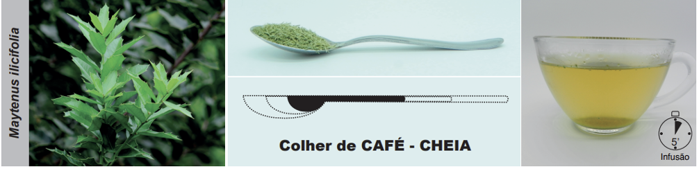
Fonte: PEREIRA, A.M.S. et al.; 20206.
Duração do uso
Observado uso por 8 semanas sem alteração nos parâmetros bioquímicos e funções psicomotoras8.
Apresentações comerciais
Apresentações industrializadas registradas na ANVISA podem ser consultadas no endereço a seguir: https://consultas.anvisa.gov.br/#/medicamentos/.
Advertências
Contraindicado para gestantes, lactantes e crianças menores de 6 anos. Não deve ser utilizado por
pessoas com sensibilidade a plantas da família Celastraceae. Efeitos adversos são leves e incluem
cefaleia,
sonolência, xerostomia, náusea, epigastralgia, gosto estranho na boca, tremor nas mãos, poliúria,
cistite e
dor articular nas mãos. Alguns compostos presentes nesta planta podem dar origem a substâncias que
inativam a CYP (citocromo P450) e modulam a atividade da PgP (fosfoglicolato fosfatase). Assim, pode
haver
alteração no efeito de diversos medicamentos. Pode ocorrer interação com esteroides anabolizantes,
metotrexato, amiodarona, cetoconazol e imunossupressores3–5.
REFERÊNCIAS BIBLIOGRÁFICAS
1. Lorenzi H, Matos FJA. Plantas Medicinais no Brasil: Nativas e Exóticas. Nova Odessa: Instituto Plantarum; 2008.
2. POWO. Plants of the World Online. Facilitated by the Royal Botanic Gardens, Kew. Published on the Internet [Internet]. 2023 [citado 25 de dezembro de 2023]. Disponível em: http://www.plantsoftheworldonline.org/.
3. Saad G de A, Léda PH de O, Sá IM, Seixlack AC de C. Fitoterapia Contemporânea - Tradição e Ciência na Prática Clínica. 3. ed. Rio de Janeiro: Guanabara Koogan; 2021. 1–578 p.
4. Brasil. Memento Fitoterápico da Farmacopeia Brasileira. 1. ed. Brasília: Agência Nacional de Vigilância Sanitária (ANVISA); 2016. 115 p.
5. Brasil. Formulário de Fitoterápicos da Farmacopeia Brasileira. 2. ed. Brasília: Agência Nacional de Vigilância Sanitária (ANVISA); 2021. 223 p.
6. Pereira AMS, Bertoni BW, Silva CCM, Ferro D, Carmona F, Tardelli FC, et al. Formulário de Preparação Extemporânea da Farmácia da Natureza. 2. ed. São Paulo: Bertolucci; 2020. 263 p.
7. Tabach R, Duarte-Almeida JM, Carlini EA. Pharmacological and Toxicological Study of Maytenus ilicifolia Leaf Extract. Part I - Preclinical Studies. Phytotherapy Research [Internet]. junho de 2017;31(6):915–20. Disponível em: http://doi.wiley.com/10.1002/ptr.5818.
8. Tabach R, Duarte-Almeida JM, Carlini EA. Pharmacological and Toxicological Study of Maytenus ilicifolia Leaf Extract Part II-Clinical Study (Phase I). Phytotherapy Research [Internet]. junho de 2017;31(6):921–6. Disponível em: http://doi.wiley.com/10.1002/ptr.5816.
9. Santos-Oliveira R, Coulaud-Cunha S, Colaco W, Colaço W, Colaco W. Revisão da Maytenus ilicifolia Mart. ex Reissek, Celasteraceae. Contribuição ao estudo das propriedades farmacológicas. Brazilian Journal of Pharmacognosy. 2009;19(2b):650–9.
10. Baggio CH, Freitas CS, Otofuji G de M, Cipriani TR, Souza LM de, Sassaki GL, et al. Flavonoid-rich fraction of Maytenus ilicifolia Mart. ex. Reiss protects the gastric mucosa of rodents through inhibition of both H+,K+ -ATPase activity and formation of nitric oxide. J Ethnopharmacol. 2007;113(3):433–40.
11. Lakshmi V, Singh N, Shrivastva S, Mishra SK, Dharmani P, Mishra V, et al. Gedunin and photogedunin of Xylocarpus granatum show significant anti-secretory effects and protect the gastric mucosa of peptic ulcer in rats. Phytomedicine [Internet]. 2009/12/08. 2010;17(8–9):569–74. Disponível em: http://www.ncbi.nlm.nih.gov/entrez/query.fcgi?cmd=Retrieve&db=PubMed&dopt=Citation&list_uids=19962286.
12. Dutra RC, Fava MB, Alves CC, Ferreira AP, Barbosa NR. Antiulcerogenic and anti-inflammatory activities of the essential oil from Pterodon emarginatus seeds. J Pharm Pharmacol [Internet]. 2009/01/31. 2009;61(2):243–50. Disponível em: http://www.ncbi.nlm.nih.gov/entrez/query.fcgi?cmd=Retrieve&db=PubMed&dopt=Citation&list_uids=19178773.
13. Jorge RM, Leite JP V, Oliveira AB, Tagliati CA. Evaluation of antinociceptive, anti-inflammatory and antiulcerogenic activities of Maytenus ilicifolia. J Ethnopharmacol. 2004;94(1):93–100.
14. Ferreira PM, de Oliveira CN, De Oliveira AB, Lopes MJ, Alzamora F, Vieira MAR. A lyophilized aqueous extract of Maytenus ilicifolia leaves inhibits histamine-mediated acid secretion in isolated frog gastric mucosa. Planta. 2004;219(2):319–24.
15. Rêgo PHM, Chaves L, Crevelin EJ, Pereira AMS, Carmona F. Monteverdia ilicifolia Infusion in Treating Dyspepsia: An Observational Study of Patients and Physicians’ Perceptions. Revista Brasileira de Farmacognosia. 6 de dezembro de 2025;36(1):4. Disponível em: https://link.springer.com/10.1007/s43450-025-00710-3.
16. Da Silva MS, Schunck RVA, Moraes MP, Corssac GB, Meirelles G, Bianchi SE, et al. Pharmacological Evaluation of the Traditional Brazilian Medicinal Plant Monteverdia ilicifolia in Gastroesophageal Reflux Disease: Preliminary Results of a Randomized Double-Blind Controlled Clinical Trial. Pharmaceuticals. 20 de novembro de 2024;17(11):1559.
17. Brasil. Instrução Normativa (IN) no 17, de 17 de dezembro de 2025. Brasília: Agência Nacional de Vigilância Sanitária (ANVISA); 2025.
18. Brasil. Relação Nacional de Medicamentos Essenciais: Rename 2024. 2. ed. Brasília: Ministério da Saúde, Secretaria de Ciência, Tecnologia, Inovação e Insumos Estratégicos em Saúde, Departamento de Assistência Farmacêutica e Insumos Estratégicos; 2025. 265 p.
Clique sobre os títulos
Peumus boldus
Informações gerais
Informações clínicas
Apresentações, Posologia e Advertências
Referências
VOLTAR AO MENU
INFORMAÇÕES GERAIS
Espécie (Família)
Peumus boldus Molina (Monimiaceae)1, 2.
Principais nomes populares
Boldo-do-chile, boldo chileno e boldo1.
Principais sinonímias
Boldea boldus (Molina) Looser, Boldu chilanum Nees, Boldea fragrans (Ruiz & Pav.)
Endl. e Peumus fragrans (Ruiz & Pav.) Pers2.
Partes utilizadas
Folhas.
Principais constituintes químicos
Alcaloides derivados do grupo isoquinolínico (boldina), outros alcaloides (isocoridina,
isocoridina-N-óxido, norisocoridina, laurolitsina, laurotetatina, reticulina, isoboldina, glaucina),
flavonoides (ramnetina, isorramnetina, kaempferol), óleos essenciais, resina, taninos e
cumarinas3,4.
INFORMAÇÕES CLÍNICAS
Principais indicações
Dispepsia, doença péptica, constipação intestinal e afecções hepatobiliares3–6.
Ações farmacológicas
Ensaios clínicos
Um único ensaio clínico até o momento demonstrou que P. boldus relaxou a musculatura lisa do
intestino.
Publicações oficiais
APRESENTAÇÕES E POSOLOGIA
Duração do uso
Não utilizar por mais de 4–8 semanas consecutivas3, 5, 10.
Apresentações comerciais
Apresentações industrializadas registradas na ANVISA podem ser consultadas no endereço a seguir: https://consultas.anvisa.gov.br/#/medicamentos/.
Advertências
Contraindicado para gestantes, lactantes, crianças menores de 6 anos e nos casos de obstrução das vias
biliares e doenças hepáticas graves como hepatites e cirrose. Doses elevadas causam irritação nas vias
urinárias, vômitos e diarreia3,5. O óleo essencial é muito tóxico, não devendo ser utilizado.
Doses altas podem causar irritação renal, vômitos e diarreias, narcose ou convulsões. A boldina, em
tratamento prolongado, pode desencadear hipocalemia, intensificar a ação antiarrítmica da quinidina e
provocar uma disfunção nos canais de potássio e aumentar a ação dos anti-hipertensivos, exacerbando o
desequilíbrio dos eletrólitos. Pode potencializar drogas hepatotóxicas e, em altas doses, ser
nefrotóxico
por conter ascaridol. Evitar o uso simultâneo com outras drogas ou fitoterápicos que induzem
hipocalemia,
como diuréticos tiazídicos, mineralocorticoide ou Glycyrrhiza spp. (alcaçuz)4. Pode
haver
interações com anticoagulantes, antiplaquetários, heparina de baixo peso molecular e agentes
trombolíticos11.
Referências bibliográficas
1. Lorenzi H, Matos FJA. Plantas Medicinais no Brasil: Nativas e Exóticas. Nova Odessa: Instituto Plantarum; 2008.
2. POWO. Plants of the World Online. Facilitated by the Royal Botanic Gardens, Kew. Published on the Internet [Internet]. 2023 [citado 25 de dezembro de 2023]. Disponível em: http://www.plantsoftheworldonline.org/.
3. Brasil. Memento Fitoterápico da Farmacopeia Brasileira. 1. ed. Brasília: Agência Nacional de Vigilância Sanitária (ANVISA); 2016. 115 p.
4. Saad G de A, Léda PH de O, Sá IM, Seixlack AC de C. Fitoterapia Contemporânea - Tradição e Ciência na Prática Clínica. 3a edição. Rio de Janeiro: Guanabara Koogan; 2021. 1–578 p.
5. Brasil. Formulário de Fitoterápicos da Farmacopeia Brasileira. 2. ed. Brasília: Agência Nacional de Vigilância Sanitária (ANVISA); 2021. 223 p.
6. Alonso J. Tratado de Fitofármacos e Nutracêuticos. São Paulo: AC Farmacêutica; 2015. 1124 p.
7. Kringstein P, Cederbaum AI. Boldine prevents human liver microsomal lipid peroxidation and inactivation of cytochrome P4502E1. Free Radic Biol Med. 1995;18:559–63.
8. Speisky H, Cassels BK. Boldo and boldine: an emerging case of natural drug development. Pharmacological research: the official journal of the Italian Pharmacological Society [Internet]. 1994 [citado 11 de janeiro de 2015];29(1):1–12. Disponível em: http://www.ncbi.nlm.nih.gov/pubmed/8202440.
9. Gotteland M, Espinoza J, Cassels B, Speisky H. Effect of a dry boldo extract on oro-cecal intestinal transit in healthy volunteers. Vol. 123, Revista medica de Chile. 1995.
10. Micromedex [Internet]. Boldo. AltMedDex. 2017 [citado 29 de abril de 2017]. Disponível em: http://psbe.ufrn.br/.
Clique sobre os títulos
Plantago ovata e Plantago indica
Informações gerais
Informações clínicas
Apresentações, Posologia e Advertências
Referências
VOLTAR AO MENU
INFORMAÇÕES GERAIS
Espécies (Família)
Plantago ovata Forssk. (Plantaginaceae) e Plantago indica L.
(Plantaginaceae)1, 2.
Observações
As espécies P. ovata e P. indica são usadas principalmente por suas sementes, como fonte
de fibra e mucilagem, conhecidas como psyllium. As espécies P. major e P.
lanceolata,
pertencentes ao mesmo gênero, são mais utilizadas por suas folhas, embora as sementes também possam ser
utilizadas, e são discutidas no capítulo do sistema respiratório.
Principais nomes populares
Psílio, psyllium e ispaghula1.
Principais sinonímias
Para P. ovata: Plantago ispaghul Roxb. e Plantago ovatifolia Steud2.
Para P. indica: Plantago psyllium L. e Plantago arenaria Waldst. & Kit2.
Partes utilizadas
Sementes (Semen Plantaginis)3 ou testa/casca da semente (Testa Plantaginis ou
psyllium
husk
)4,5.
Principais constituintes químicos
Mucilagens (até 30%), compostas por polissacarídeos e monossacarídeos (galactose, glicose, xilose,
arabinose, rhamnose, planteose), além de esteróis, triterpenos e glicosídeos3,4, óleos
voláteis e fixos, ácidos graxos, hemicelulose, proteínas, heterosídeos iridoides e
glucosinolatos6,7.
INFORMAÇÕES CLÍNICAS
Principais indicações
Constipação intestinal, síndrome metabólica e síndrome do intestino irritável3-5, e colite
ulcerativa8.
Ações farmacológicas
Ensaios clínicos
Ensaios clínicos e revisões sistemáticas com meta-análises têm comprovado a eficácia de psyllium
no
tratamento de colite ulcerativa, constipação intestinal, síndrome metabólica e hemorroidas.
Publicações oficiais
APRESENTAÇÕES E POSOLOGIA
Associações
Dependendo do tipo de constipação, a experiência clínica mostra que a associação com outras plantas
medicinais tem resultado mais efetivo, podendo-se associar com Tamarindus indica, Senna
alexandrina,
Rhamnus purshiana ou Taraxacum officinale.
Duração do uso
Recomenda-se a utilização de 3 a 10 dias consecutivos com ingestão de bastante líquido. Após este
período administrar conforme necessidade6. Outra recomendação é de usar por, pelo menos, 14
dias, podendo se estender por até 3 meses, seguido de uso esporádico5.
Apresentações comerciais
Apresentações industrializadas registradas na ANVISA podem ser consultadas no endereço a seguir: https://consultas.anvisa.gov.br/#/medicamentos/.
Advertências
Contraindicado para crianças menores de 6 anos de idade e em casos de obstrução intestinal,
sangramento retal, dor abdominal, náusea e vômito9 ou em pacientes diabéticos com
dificuldade de ajuste nas doses de insulina6. O pólen e a casca da semente podem causar
reações alérgicas. Pode causar distensão abdominal, sensação de plenitude, flatulência e meteorismo.
Evitar associação com digitálicos, outros medicamentos laxantes, antidiarreicos ou com loperamida,
difenoxilato, opiáceos e outros inibidores da motilidade intestinal3,4. Interações podem
ocorrer
com Glycyrrhyza glabra, carbamazepina, hipoglicemiantes orais e lítio9. Interage na
absorção
de cálcio, zinco, magnésio, cobre, vitamina B12, glicosídeos cardíacos e derivados
cumarínicos6.
A absorção de outros medicamentos pode ser retardada. Por este motivo, outros medicamentos devem ser
consumidos de 30 a 120 minutos antes ou após o consumo de P. ovata5.
REFERÊNCIAS BIBLIOGRÁFICAS
1. Lorenzi H, Matos FJA. Plantas Medicinais no Brasil: Nativas e Exóticas. Nova Odessa: Instituto Plantarum; 2008.
2. POWO. Plants of the World Online. Facilitated by the Royal Botanic Gardens, Kew. Published on the Internet [Internet]. 2023 [citado 25 de dezembro de 2023]. Disponível em: http://www.plantsoftheworldonline.org/.
3. WHO. WHO Monographs on selected medicinal plants (Volume 1). 1st ed. Vol. 1. Geneva: World Health Organization; 1999. 289 p.
4. WHO. WHO Monographs on selected medicinal plants (Volume 3). 1st ed. Vol. 3. Geneva: World Health Organization; 2007. 390 p.
5. Brasil, Ministério da Saúde, Secretaria de Ciência Tecnologia Inovação e Complexo da Saúde, Departamento de Assistência Farmacêutica e Insumos Estratégicos. Plantago ovata Forssk. Plantaginaceae – Psyllium [Internet]. Informações Sistematizadas da Relação Nacional de Plantas Medicinais de Interesse ao SUS. Brasília: Ministério da Saúde; 2020 [citado 7 de janeiro de 2024]. p. 64. Disponível em: https://bvsms.saude.gov.br/bvs/publicacoes/informacoes_sistematizadas_relacao_plantago_psyllium.pdf.
6. Saad G de A, Léda PH de O, Sá IM, Seixlack AC de C. Fitoterapia Contemporânea - Tradição e Ciência na Prática Clínica. 3. ed. Rio de Janeiro: Guanabara Koogan; 2021. 1–578 p.
7. Pereira AMS, Bertoni BW, Jorge CR, Ferro D, Carmona F, Morel LJ de F, et al. Manual prático de multiplicação e colheita de plantas medicinais. São Paulo: Bertolucci; 2010. 280 p.
8. Triantafyllidi A, Xanthos T, Papalois A, Triantafillidis JK. Herbal and plant therapy in patients with inflammatory bowel disease. Ann Gastroenterol [Internet]. 2015;28(2):210–20. Disponível em: http://www.ncbi.nlm.nih.gov/pubmed/25830661.
9. Micromedex [Internet]. Psyllium [Internet]. DrugPoint. 2017 [citado 29 de abril de 2017]. Disponível em: http://psbe.ufrn.br/.
10. Fernández-Bañares F, Hinojosa J, Sánchez-Lombraña JL, Navarro E, Martínez-Salmerón JF, García-Pugues A, et al. Randomized clinical trial of Plantago ovata seeds (dietary fiber) as compared with mesalamine in maintaining remission in ulcerative colitis. Spanish Group for the Study of Crohn’s Disease and Ulcerative Colitis (GETECCU). Am J Gastroenterol [Internet]. fevereiro de 1999;94(2):427–33. Disponível em: http://www.ncbi.nlm.nih.gov/pubmed/10022641.
11. Menon J, Thapa BR, Kumari R, Puttaiah Kadyada S, Rana S, Lal SB. Efficacy of Oral Psyllium in Pediatric Irritable Bowel Syndrome. J Pediatr Gastroenterol Nutr. 22 de janeiro de 2023;76(1):14–9.
12. Gruenwald J, Brendler T, Jaenicke C. Physician’s Desk Reference (PDR) for Herbal Medicines. 4th ed. Connecticut: Thomson; 2007. 1034 p.
13. Tomás-Ridocci M, Añón R, Mínguez M, Zaragoza A, Ballester J, Benages A. [The efficacy of Plantago ovata as a regulator of intestinal transit. A double-blind study compared to placebo]. Revista espanola de enfermedades digestivas. julho de 1992;82(1):17–22.
14. Chaplin MF, Chaudhury S, Dettmar PW, Sykes J, Shaw AD, Davies GJ. Effect of ispaghula husk on the faecal output of bile acids in healthy volunteers. J Steroid Biochem Mol Biol. abril de 2000;72(5):283–92.
15. Voderholzer WA, Schatke W, Mühldorfer BE, Klauser AG, Birkner B, Müller-Lissner SA. Clinical response to dietary fiber treatment of chronic constipation. Am J Gastroenterol. janeiro de 1997;92(1):95–8.
16. Block LH. Management of constipation with a refined psyllium combined with dextrose. American Journal of Digestive Diseases. fevereiro de 1947;14(2):64–74.
17. McRorie, Daggy, Morel, Diersing, Miner, Robinson. Psyllium is superior to docusate sodium for treatment of chronic constipation. Aliment Pharmacol Ther. 25 de maio de 1998;12(5):491–7.
18. Soltanian N, Janghorbani M. Effect of flaxseed or psyllium vs. placebo on management of constipation, weight, glycemia, and lipids: A randomized trial in constipated patients with type 2 diabetes. Clin Nutr ESPEN [Internet]. 1o de fevereiro de 2019;29:41–8. Disponível em: https://linkinghub.elsevier.com/retrieve/pii/S2405457718305795.
19. Noureddin S, Mohsen J, Payman A. Effects of psyllium vs. placebo on constipation, weight, glycemia, and lipids: A randomized trial in patients with type 2 diabetes and chronic constipation. Complement Ther Med [Internet]. 1o de outubro de 2018;40:1–7. Disponível em: https://linkinghub.elsevier.com/retrieve/pii/S096522991830133X.
20. Foroughi M, Taghavi Ardakani A, Taghizadeh M, Sharif MR. Comparing the Effect of Polyethylene Glycol, Psyllium Seed Husk Powder, and Probiotics on Constipation in Children. Iran J Pediatr. 2 de agosto de 2022;32(5).
21. Shinghal U, Kaundal P, Sharma S. Comparative efficacy of polyethylene glycol 3350 and psyllium in treatment of pediatric functional constipation: A randomized and controlled trial. Natl J Physiol Pharm Pharmacol. 2023;(0):1.
22. Gelissen I, Brodie B, Eastwood M. Effect of Plantago ovata (psyllium) husk and seeds on sterol metabolism: studies in normal and ileostomy subjects. Am J Clin Nutr. fevereiro de 1994;59(2):395–400.
23. Solà R, Godàs G, Ribalta J, Vallvé JC, Girona J, Anguera A, et al. Effects of soluble fiber (Plantago ovatahusk) on plasma lipids, lipoproteins, and apolipoproteins in men with ischemic heart disease. Am J Clin Nutr. abril de 2007;85(4):1157–63.
24. Miettinen TA, Tarpila S. Serum lipids and cholesterol metabolism during guar gum, plantago ovata and high fibre treatments. Clinica Chimica Acta. agosto de 1989;183(3):253–62.
25. Anderson JW, Allgood LD, Turner J, Oeltgen PR, Daggy BP. Effects of psyllium on glucose and serum lipid responses in men with type 2 diabetes and hypercholesterolemia. Am J Clin Nutr. outubro de 1999;70(4):466–73.
26. Ganji V, Kuo J. Serum lipid responses to psyllium fiber: differences between pre- and
27. Ziai SA, Larijani B, Akhoondzadeh S, Fakhrzadeh H, Dastpak A, Bandarian F, et al. Psyllium decreased serum glucose and glycosylated hemoglobin significantly in diabetic outpatients. J Ethnopharmacol. novembro de 2005;102(2):202–7.
28. Gibb RD, Sloan KJ, McRorie JW. Psyllium is a natural nonfermented gel-forming fiber that is effective for weight loss: A comprehensive review and meta-analysis. J Am Assoc Nurse Pract. agosto de 2023;35(8):468–76.
29. Zhu R, Lei Y, Wang S, Zhang J, Mengjiao Lv, Jiang R, et al. Plantago consumption significantly reduces total cholesterol and low-density lipoprotein cholesterol in adults: A systematic review and meta-analysis. Nutrition Research. junho de 2024;126:123–37.
30. Gholami Z, Paknahad Z. Psyllium supplementation and lipid profiles: systematic review and dose-response meta-analysis of randomized controlled trials. Genes Nutr. 9 de dezembro de 2025;20(1):27.
31. Gholami Z, Clark CCT, Paknahad Z. The effect of psyllium on fasting blood sugar, HbA1c, HOMA IR, and insulin control: a GRADE-assessed systematic review and meta-analysis of randomized controlled trials. BMC Endocr Disord. 6 de junho de 2024;24(1):82.
32. Perez-Miranda M, Gomez-Cedenilla A, León-Colombo T, Pajares J, Mate-Jimenez J. Effect of fiber supplements on internal bleeding hemorrhoids. Hepatogastroenterology. 1996;43(12):1504–7.
33. Kecmanovic D, Pavlov M, Ceranic M, Sepetkovski A, Kovacevic P, Stamenkovic A, et al. Plantago ovata (Laxomucil) after hemorrhoidectomy. Acta Chir Iugosl. 2004;51(3):121–3.
34. Kecmanovic DM, Pavlov MJ, Ceranic MS, Kerkez MD, Rankovic VI, Masirevic VP. Bulk agent Plantago ovata after Milligan‐Morgan hemorrhoidectomy with LigasureTM. Phytotherapy Research. 18 de agosto de 2006;20(8):655–8.
35. Brasil. Relação Nacional de Medicamentos Essenciais: Rename 2024. 2. ed. Brasília: Ministério da Saúde, Secretaria de Ciência, Tecnologia, Inovação e Insumos Estratégicos em Saúde, Departamento de Assistência Farmacêutica e Insumos Estratégicos; 2025. 265 p.
36. Pereira AMS, Bertoni BW, Silva CCM, Ferro D, Carmona F, Cestari IM, et al. Formulário Fitoterápico da Farmácia da Natureza. 3. ed. São Paulo: Bertolucci; 2020. 465 p.
Clique sobre os títulos
Psidium guajava
Informações gerais
Informações clínicas
Apresentações, Posologia e Advertências
Referências
VOLTAR AO MENU
INFORMAÇÕES GERAIS
Espécie (Família)
Psidium guajava L. (Myrtaceae)1, 2.
Principais nomes populares
Goiabeira, araçá-goiaba, araçá-guaçú1.
Principais sinonímias
Guajava pumila (Vahl) Kuntze, Guajava pyrifera Kuntze e Myrtus guajava (L.)
Kuntze2.
Partes utilizadas
Brotos e folhas jovens3.
Principais constituintes químicos
Taninos (guavinas, pedunculagina, casuarinina), ácidos orgânicos (catequínico, clorogênico, cafeico,
elágico, ferúlico), terpenoides (sesquiterpenos e triterpenos), flavonoides (quercetina, guayaverina,
hiperina), e óleos voláteis3.
INFORMAÇÕES CLÍNICAS
Principais indicações
Tratamento da diarreia aguda não infecciosa e enterite por rotavírus e dismenorreia4,
diarreia
crônica5, vaginites e úlceras cutâneas4.
Outras indicações
Osteoartrites e gengivite crônica.
Ações farmacológicas
Ensaios clínicos
Ensaios clínicos têm comprovado a eficácia de P. guajava no tratamento de diarreia aguda, dismenorreia,
gengivite crônica e osteoartrite.
Publicações oficiais
APRESENTAÇÕES E POSOLOGIA
* 0,5 g de brotos e folhas jovens secos rasurados corresponde aproximadamente a uma colher de chá caseira cheia (Figura 1).
Figura 1. Preparo do infuso de Psidium guajava.
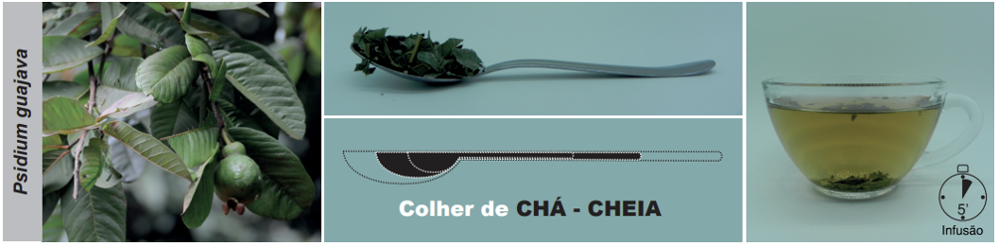
Fonte: PEREIRA, A.M.S. et al.; 202016.
Duração do uso
Para diarreia, usar até cessar os sintomas ou, no máximo, por 30 dias.
Apresentações comerciais
Apresentações industrializadas registradas na ANVISA podem ser consultadas no endereço a seguir: https://consultas.anvisa.gov.br/#/medicamentos/.
Advertências
Contraindicado para gestantes, lactantes e crianças menores de 3 anos. Pacientes diabéticos podem
apresentar hipoglicemia. Não foram encontrados dados sobre interações medicamentosas na
literatura3, 16, 18. O
uso excessivo pode causar constipação intestinal devido ao mecanismo de ação de P. guajava.
REFERÊNCIAS BIBLIOGRÁFICAS
1. Lorenzi H, Matos FJA. Plantas Medicinais no Brasil: Nativas e Exóticas. Nova Odessa: Instituto Plantarum; 2008.
2. POWO. Plants of the World Online. Facilitated by the Royal Botanic Gardens, Kew. Published on the Internet [Internet]. 2023 [citado 25 de dezembro de 2023]. Disponível em: http://www.plantsoftheworldonline.org/.
3. Brasil. Memento Fitoterápico da Farmacopeia Brasileira. 1. ed. Brasília: Agência Nacional de Vigilância Sanitária (ANVISA); 2016. 115 p.
4. WHO. WHO Monographs on selected medicinal plants (Volume 4). 1st ed. Vol. 4. Geneva: World Health Organization; 2009. 456 p.
5. Alonso J. Tratado de Fitofármacos e Nutracêuticos. São Paulo: AC Farmacêutica; 2015. 1124 p.
6. Birdi T, Daswani P, Brijesh S, Tetali P, Natu A, Antia N. Newer insights into the mechanism of action of Psidium guajava L. leaves in infectious diarrhoea. BMC Complement Altern Med. 2010;10:33.
7. Ezekwesili JO, Nkemdilim UU, Okeke CU. Mechanism of antidiarrhoeal effect of ethanolic extract of Psidium guajava leaves. Biokemistri [Internet]. 2010;22(2):85–90. Disponível em: https://tspace.library.utoronto.ca/handle/1807/44757.
8. Liu C, Jullian V, Chassagne F. Ethnobotany, phytochemistry, and biological activities of Psidium guajava in the treatment of diarrhea: a review. Front Pharmacol. 23 de agosto de 2024;15.
9. Lozoya X, Reyes-Morales H, Chávez-Soto MA, Martínez-García M del C, Soto-González Y, Doubova S V. Intestinal anti-spasmodic effect of a phytodrug of Psidium guajava folia in the treatment of acute diarrheic disease. J Ethnopharmacol [Internet]. novembro de 2002;83(1–2):19–24. Disponível em: http://www.ncbi.nlm.nih.gov/pubmed/12413703.
10. Doubova SV, Morales HR, Hernández SF, Martínez-García M del C, Ortiz MG de C, Soto MAC, et al. Effect of a Psidii guajavae folium extract in the treatment of primary dysmenorrhea: A randomized clinical trial. J Ethnopharmacol. 2007;110(2):305–10.
11. Nayak N, Varghese J, Shetty S, Bhat V, Durgekar T, Lobo R, et al. Evaluation of a mouthrinse containing guava leaf extract as part of comprehensive oral care regimen- a randomized placebo-controlled clinical trial. BMC Complement Altern Med. 21 de dezembro de 2019;19(1):327.
12. Kakuo S, Fushimi T, Kawasaki K, Nakamura J, Ota N. Effects of Psidium guajava Linn. leaf extract in Japanese subjects with knee pain: a randomized, double-blind, placebo-controlled, parallel pilot study. Aging Clin Exp Res. 23 de novembro de 2018;30(11):1391–8.
13. Tomonaga A, Watanabe K, Nakasone Y, Watanabe K, Nagaoka I. Effect of a dietary supplement containing glucosamine hydrochloride, chondroitin sulfate, methylsulfonylmethane and guava leaf extract on knee joint-related quality of life in eldely individuals - Stratified analysis based on Kellgren-Lawrence grades. Japanese Pharmacology and Therapeutics . 2017;45(3):437–46.
14. Brasil. Formulário de Fitoterápicos da Farmacopeia Brasileira. 2. ed. Brasília: Agência Nacional de Vigilância Sanitária (ANVISA); 2021. 223 p.
15. Brasil. Instrução Normativa (IN) n. 412 de 17 de dezembro de 2025. Dispõe sobre a lista brasileira de espécies vegetais para registro simplificado de fitoterápicos. Brasília: Agência Nacional de Vigilância Sanitária (ANVISA); 2025.
16. Pereira AMS, Bertoni BW, Silva CCM, Ferro D, Carmona F, Tardelli FC, et al. Formulário de Preparação Extemporânea da Farmácia da Natureza. 2. ed. São Paulo: Bertolucci; 2020. 263 p.
17. Gilbert B, Ferreira JLP, Alves LF. Monografias de Plantas Medicinais Brasileiras e Aclimatadas. Curitiba: Abifito; 2005. 159.
18. Campinas. Plantas Medicinais. Cartilha da Botica da Família. Campinas: Prefeitura Municipal de Campinas; 2018.
19. Pereira AMS, Bertoni BW, Silva CCM, Ferro D, Carmona F, Cestari IM, et al. Formulário Fitoterápico da Farmácia da Natureza. 3. ed. São Paulo: Bertolucci; 2020. 465 p.
20. Saad G de A, Léda PH de O, Sá IM, Seixlack AC de C. Fitoterapia Contemporânea - Tradição e Ciência na Prática Clínica. 3. ed. Rio de Janeiro: Guanabara Koogan; 2021. 1–578 p.
Clique sobre os títulos
Silybum marianum
Informações gerais
Informações clínicas
Apresentações, Posologia e Advertências
Referências
VOLTAR AO MENU
INFORMAÇÕES GERAIS
Espécie (Família)
Silybum marianum (L.) Gaertn. (Asteraceae)1, 2.
Principais nomes populares
Cardo-mariano, cardo-santo, cardo-de-leite e cardo-de-santa-maria1.
Principais sinonímias
Carduus mariae Crantz e Carduus marianus L.2.
Partes utilizadas
Frutos maduros secos sem papilho.
Principais constituintes químicos
Flavolignanas (silimarina: silibina, isosilibina, silicristina, silidianina), flavonois3,
flavonoides (quercetina, kaempferol), flavonas (apigenina, crisoediol), mucilagens, proteínas (25-30%),
tiramina, ácidos graxos (ácido linoleico, oleico e palmítico), ácidos orgânicos, tocoferois e
esteroides.
INFORMAÇÕES CLÍNICAS
Principais indicações
Dispepsia, afecções hepáticas crônicas4, incluindo cirrose e esteatose hepática, e como
antioxidante, anti-inflamatório, antialérgico e desintoxicante (depurativo) nos casos de intoxicação
exógena5.
Ações farmacológicas
Ensaios clínicos
Ensaios clínicos e revisões sistemáticas com meta-análises têm validado a eficácia de S. marianum
no
tratamento de hepatopatias crônicas, doença hepática gordurosa não alcoólica (esteatose hepática),
síndrome metabólica e como cardioprotetor.
Publicações oficiais
APRESENTAÇÕES E POSOLOGIA
Legenda: * UV, espectrofotometria por ultravioleta; **HPLC, high-performance liquid chromatography , ou cromatografia líquida de alta eficiência (CLAE).
Duração do uso
Não há dados na literatura.
Apresentações comerciais
Apresentações industrializadas registradas na ANVISA podem ser consultadas no endereço a seguir: https://consultas.anvisa.gov.br/#/medicamentos/.
Advertências
Contraindicado para gestantes, lactantes e crianças menores de 18 anos e nos pacientes portadores de
obstrução das vias biliares. Não usar em pacientes com hipersensibilidade conhecida às plantas que
pertencem à família Asteraceae5. Pela presença de tiramina, deve-se usar com cautela
em
pacientes hipertensos e que façam uso de hipoglicemiantes. Efeitos adversos são raros e incluem
diarreia, náuseas, vômitos, aumento da fadiga, insônia, flatulência, plenitude e dor gastrointestinal,
artralgias, cefaleia, urticária, prurido, secura da boca. Pode ter efeito laxante leve17.
Sugere-se que possa interagir com vários medicamentos pela inibição do metabolismo por várias isoenzimas
do citocromo P450, ou afetar o transporte pela glicoproteína-P, ainda que a relevância clínica possa ser
muito baixa. Pode inibir CYP 1A2 e CYP 3A4, podendo provocar um aumento da concentração
plasmática da amitriptilina, ondansetrona, haloperidol, clozapina propanolol. Pode diminuir a
concentração
plasmática do indinavir via CYP 2D6. Pela presença de tiramina pode interagir com inibidores de
monoaminoxidase (MAO)17. Pode elevar os níveis de metabólitos hepatotóxicos da
pirazinamida18. Pode haver interação com metronidazol19.
REFERÊNCIAS BIBLIOGRÁFICAS
1. Lorenzi H, Matos FJA. Plantas Medicinais no Brasil: Nativas e Exóticas. Nova Odessa: Instituto Plantarum; 2008.
2. POWO. Plants of the World Online. Facilitated by the Royal Botanic Gardens, Kew. Published on the Internet [Internet]. 2023 [citado 25 de dezembro de 2023]. Disponível em: http://www.plantsoftheworldonline.org/.
3. WHO. WHO Monographs on selected medicinal plants (Volume 2). 1st ed. Vol. 2. Geneva: World Health Organization; 1999. 357 p.
4. Brasil. Formulário de Fitoterápicos da Farmacopeia Brasileira. 2. ed. Brasília: Agência Nacional de Vigilância Sanitária (ANVISA); 2021. 223 p.
5. Gruenwald J, Brendler T, Jaenicke C. Physician’s Desk Reference (PDR) for Herbal Medicines. 4th ed. Connecticut: Thomson; 2007. 1034 p.
6. Kalopitas G, Antza C, Doundoulakis I, Siargkas A, Kouroumalis E, Germanidis G, et al. Impact of Silymarin in individuals with nonalcoholic fatty liver disease: A systematic review and meta-analysis. Nutrition. março de 2021;83:111092.
7. Li S, Duan F, Li S, Lu B. Administration of silymarin in NAFLD/NASH: A systematic review and meta-analysis. Ann Hepatol. março de 2024;29(2):101174.
8. Wang C, Shang Y, Kanaan G, Chai L, Li H, Qi X. Silymarin for adults with metabolic dysfunction-associated steatotic liver disease. Cochrane Database of Systematic Reviews. 24 de junho de 2025;2025(6).
9. Soleymani S, Ayati MH, Mansourzadeh MJ, Namazi N, Zargaran A. The effects of Silymarin on the features of cardiometabolic syndrome in adults: A systematic review and meta‐analysis. Phytotherapy Research. 11 de fevereiro de 2022;36(2):842–56.
10. Xiao F, Gao F, Zhou S, Wang L. The therapeutic effects of silymarin for patients with glucose/lipid metabolic dysfunction. Medicine. 2 de outubro de 2020;99(40):e22249.
11. Tóth B, Németh D, Soós A, Hegyi P, Pham-Dobor G, Varga O, et al. The Effects of a Fixed Combination of Berberis aristata and Silybum marianum on Dyslipidaemia – A Meta-analysis and Systematic Review. Planta Med. 29 de janeiro de 2020;86(02):132–43.
12. Fogacci F, Grassi D, Rizzo M, Cicero AFG. Metabolic effect of berberine–silymarin association: A meta‐analysis of randomized, double‐blind, placebo‐controlled clinical trials. Phytotherapy Research. 10 de abril de 2019;33(4):862–70.
13. Mohammadi H, Hadi A, Arab A, Moradi S, Rouhani MH. Effects of silymarin supplementation on blood lipids: A systematic review and meta‐analysis of clinical trials. Phytotherapy Research. 5 de abril de 2019;33(4):871–80.
14. Ravari SS, Talaei B, Gharib Z. The effects of silymarin on type 2 diabetes mellitus: A systematic review and meta-analysis. Obes Med. setembro de 2021;26:100368.
15. Voroneanu L, Nistor I, Dumea R, Apetrii M, Covic A. Silymarin in Type 2 Diabetes Mellitus: A Systematic Review and Meta-Analysis of Randomized Controlled Trials. J Diabetes Res. 2016;2016:1–10.
16. Singh M, Kadhim MM, Turki Jalil A, Oudah SK, Aminov Z, Alsaikhan F, et al. A systematic review of the protective effects of silymarin/silibinin against doxorubicin-induced cardiotoxicity. Cancer Cell Int. 10 de maio de 2023;23(1):88.
17. Alonso J. Tratado de Fitofármacos e Nutracêuticos. São Paulo: AC Farmacêutica; 2015. 1124 p.
18. Williamsom E, Driver S, Baxter K. Interações Medicamentosas de Stockley: plantas medicinais e medicamentos fitoterápicos. Porto Alegre: Artmed; 2012. 440 p.
19. Micromedex [Internet]. Milk Thistle. AltMedDex. 2017 [citado 29 de abril de 2017]. Disponível em: http://psbe.ufrn.br/.
Clique sobre os títulos
Zingiber officinale
Informações gerais
Informações clínicas
Apresentações, Posologia e Advertências
Referências
VOLTAR AO MENU
INFORMAÇÕES GERAIS
Espécie (Família)
Zingiber officinale Roscoe (Zingiberaceae)1, 2.
Principais nomes populares
Gengibre, gengivre e mangarataia1.
Principais sinonímias
Amomum zingiber L. e Zingiber aromaticum Noronha2.
Partes utilizadas
Rizomas.
Principais constituintes químicos
Óleo essencial (zingibereno, β-bisabolol, β-sesquifelandreno, bisaboleno, canfeno, α-pineno, cimol,
citral, borneol, mirceno, limoneno, sesquifelandreno, gingeróis, gingeronas e shagaol), óleo resina,
compostos fenólicos (shogaol e gingerol); zingeronas e diterpenoides de núcleo lábdano3,4.
Principais indicações
Infecções das vias aéreas superiores (gripes, resfriados, inflamação da garganta, rouquidão e tosses
produtivas), bronquites, broncoespasmo4,7,8. Antiemético, antidispéptico e nos casos de
cinetose5.
Profilaxia de náuseas e vômitos durante a gravidez6.
Outras indicações
Náuseas, vômitos, dispepsias. Como anti-inflamatório em doenças inflamatórias como
osteoartrite7,8 e na
dismenorreia primária9–12.
INFORMAÇÕES CLÍNICAS
Principais indicações
Antiemético, antidispéptico e nos casos de cinetose5. Profilaxia de náuseas e vômitos durante
a gravidez6.
Outras indicações
Infecções das vias aéreas superiores (gripes e resfriados), bronquites, broncoespasmo, inflamação da
garganta, rouquidão, e tosses produtivas.4,7,8. Como anti-inflamatório em doenças
inflamatórias como osteoartrite9,10 e na dismenorreia primária11–14.
Ações farmacológicas
Ensaios clínicos
Ensaios clínicos têm comprovado a eficácia de Z. officinale para náusea e vômitos, incluindo hiperemese
gravídica, osteoartrite, dismenorreia e síndrome metabólica.
Publicações oficiais
APRESENTAÇÕES E POSOLOGIA
**1 g de rizomas secos fragmentados corresponde aproximadamente a uma colher de café cheia (Figura 1).
Figura 1. Preparo do decocto de Zingiber officinale.
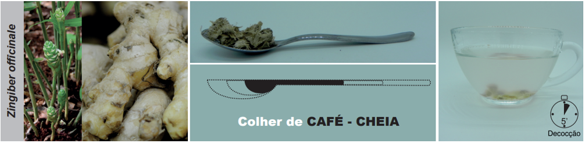
Fonte: PEREIRA, A.M.S. et al.; 202035.
Duração do uso
Não há dados na literatura. Em pacientes idosos, a duração do uso pode ser de 2 a 4
semanas17.
Advertências
Contraindicado para menores de 6 anos e adultos portadores de cálculos biliares, queixas gástricas e
hipertensão arterial sistêmica. Em pacientes que fazem uso de anticoagulantes ou que apresentam
coagulopatias, Z. officinale pode afetar o tempo de sangramento e parâmetros imunológicos. Altas doses
(12–14
g) de Z. officinale podem, em teoria, aumentar os efeitos hipotrombinêmicos da terapia anticoagulante,
embora haja dados conflitantes na literatura34. Doses elevadas podem ainda causar arritmias
cardíacas e depressão do sistema nervoso central. Pode interagir com hipoglicemiantes orais. Efeitos
adversos são raros e incluem dermatite de contato em pacientes sensíveis3. Na gravidez a dose
máxima recomendada é de 1 g/dia4. Pode ter efeito sinérgico aditivo com drogas
hipoglicemiantes33.
Existem relatos (não confirmados) de interação com anticoagulantes como a varfarina37.
REFERÊNCIAS BIBLIOGRÁFICAS
1. Lorenzi H, Matos FJA. Plantas Medicinais no Brasil: Nativas e Exóticas. Nova Odessa: Instituto Plantarum; 2008.
2. POWO. Plants of the World Online. Facilitated by the Royal Botanic Gardens, Kew. Published on the Internet [Internet]. 2023 [citado 25 de dezembro de 2023]. Disponível em: http://www.plantsoftheworldonline.org/.
3. Brasil. Memento Fitoterápico da Farmacopeia Brasileira. 1a ed. Brasília: Agência Nacional de Vigilância Sanitária (ANVISA); 2016. 115 p.
4. Saad G de A, Léda PH de O, Sá IM, Seixlack AC de C. Fitoterapia Contemporânea - Tradição e Ciência na Prática Clínica. 3. ed. Rio de Janeiro: Guanabara Koogan; 2021. 1–578 p.
5. WHO. WHO Monographs on selected medicinal plants (Volume 1). 1st ed. Vol. 1. Geneva: World Health Organization; 1999. 289 p.
6. Ernst E, Pittler MH. Efficacy of ginger for nausea and vomiting: a systematic review of randomized clinical trials. Br J Anaesth. março de 2000;84(3):367–71. Disponível em: http://www.ncbi.nlm.nih.gov/pubmed/10793599.
7. Ahui MLB, Champy P, Ramadan A, Pham Van L, Araujo L, Brou André K, et al. Ginger prevents Th2-mediated immune responses in a mouse model of airway inflammation. Int Immunopharmacol. 10 de dezembro de 2008 [citado 28 de dezembro de 2014];8(12):1626–32. Disponível em: http://www.ncbi.nlm.nih.gov/pubmed/18692598.
8. Ghayur MN, Gilani AH, Janssen LJ. Ginger attenuates acetylcholine-induced contraction and Ca2+ signalling in murine airway smooth muscle cells. Can J Physiol Pharmacol. maio de 2008 [citado 16 de dezembro de 2014];86(5):264–71. Disponível em: http://www.ncbi.nlm.nih.gov/pubmed/18432287.
9. Ahui MLB, Champy P, Ramadan A, Pham Van L, Araujo L, Brou André K, et al. Ginger prevents Th2-mediated immune responses in a mouse model of airway inflammation. Int Immunopharmacol [Internet]. 10 de dezembro de 2008 [citado 28 de dezembro de 2014];8(12):1626–32. Disponível em: http://www.ncbi.nlm.nih.gov/pubmed/18692598.
10. Ghayur MN, Gilani AH, Janssen LJ. Ginger attenuates acetylcholine-induced contraction and Ca2+ signalling in murine airway smooth muscle cells. Can J Physiol Pharmacol [Internet]. maio de 2008 [citado 16 de dezembro de 2014];86(5):264–71. Disponível em: http://www.ncbi.nlm.nih.gov/pubmed/18432287.
11. Dragos D, Gilca M, Gaman L, Vlad A, Iosif L, Stoian I, et al. Phytomedicine in Joint Disorders. Nutrients [Internet]. 2017;9(1):70. Disponível em: http://www.mdpi.com/2072-6643/9/1/70.
12. Ghasemian M, Owlia S, Owlia MB. Review of Anti-Inflammatory Herbal Medicines. Adv Pharmacol Sci. 2016;2016:9130979.
13. Nahid K, Fariborz M, Ataolah G, Solokian S. The effect of an Iranian herbal drug on primary dysmenorrhea: a clinical controlled trial. J Midwifery Womens Health [Internet]. 54(5):401–4. Disponível em: http://www.ncbi.nlm.nih.gov/pubmed/19720342.
14. Ozgoli G, Goli M, Simbar M. Effects of ginger capsules on pregnancy, nausea, and vomiting. Journal of Alternative and Complementary Medicine. 2009;15(3):243–6.
15. Khan AM, Shahzad M, Raza Asim MB, Imran M, Shabbir A. Zingiber officinale ameliorates allergic asthma via suppression of Th2-mediated immune response. Pharm Biol [Internet]. 2015;53(3):359–67. Disponível em: http://www.ncbi.nlm.nih.gov/pubmed/25420680.
16. Podlogar JA, Verspohl EJ. Antiinflammatory effects of ginger and some of its components in human bronchial epithelial (BEAS-2B) cells. Phytother Res [Internet]. março de 2012;26(3):333–6. Disponível em: http://www.ncbi.nlm.nih.gov/pubmed/21698672.
17. Mangprayool T, Kupittayanant S, Chudapongse N. Participation of citral in the bronchodilatory effect of ginger oil and possible mechanism of action. Vol. 89, Fitoterapia. 2013. p. 68–73.
18. Alonso J. Tratado de Fitofármacos e Nutracêuticos. São Paulo: AC Farmacêutica; 2015. 1124 p.
18. Pongrojpaw D, Somprasit C, Chanthasenanont A. A randomized comparison of ginger and dimenhydrinate in the treatment of nausea and vomiting in pregnancy. J Med Assoc Thai [Internet]. setembro de 2007;90(9):1703–9. Disponível em: http://www.ncbi.nlm.nih.gov/pubmed/17957907.
19. Gao P. Effectiveness of ginger supplementation in alleviating hyperemesis gravidarum: a systematic review and meta-analysis. Am J Transl Res. 2025;17(3):1568–79.
20. Pillai AK, Sharma KK, Gupta YK, Bakhshi S. Anti-emetic effect of ginger powder versus placebo as an add-on therapy in children and young adults receiving high emetogenic chemotherapy. Pediatr Blood Cancer [Internet]. fevereiro de 2011;56(2):234–8. Disponível em: http://www.ncbi.nlm.nih.gov/pubmed/20842754.
21. Zhao C, Chen W, Wang D, Cong X, Zhu M, Zhu C, et al. Ginger (Zingiber officinale Roscoe) preparations for prophylaxis of postoperative nausea and vomiting: A Bayesian network meta-analysis. J Ethnopharmacol. dezembro de 2023;317:116791.
22. Ozgoli G, Goli M, Moattar F. Comparison of effects of ginger, mefenamic acid, and ibuprofen on pain in women with primary dysmenorrhea. J Altern Complement Med [Internet]. fevereiro de 2009;15(2):129–32. Disponível em: http://www.ncbi.nlm.nih.gov/pubmed/19216660.
23. Gurung A, Khatiwada B, Kayastha B, Parsekar S, Mistry SK, Yadav UN. Effectiveness of Zingiber Officinale(ginger) compared with non-steroidal anti-inflammatory drugs and complementary therapy in primary dysmenorrhoea: A systematic review. Clin Epidemiol Glob Health. novembro de 2022;18:101152.
24. Nazarpour S, Simbar M. Effect of oral and topical ginger on primary dysmenorrhoea: a systematic review. J Herb Med. agosto de 2024;46:100890.
25. Salih AK, Alwan AH, Khadim M, Al‐qaim ZH, Mardanov B, El‐Sehrwy AA, et al. Effect of ginger (Zingiber officinale) intake on human serum lipid profile: Systematic review and meta‐analysis. Phytotherapy Research. 14 de junho de 2023;37(6):2472–83.
26. Zhou Q, Peng Y, Chen F, Dai J. Ginger supplementation for the treatment of non-alcoholic fatty liver disease: a meta-analysis of randomized controlled trials. Afr Health Sci. 11 de abril de 2023;23(1):614–21.
27. Daniels CC, Isaacs Z, Finelli R, Leisegang K. The efficacy of Zingiber officinale on dyslipidaemia, blood pressure, and inflammation as cardiovascular risk factors: A systematic review. Clin Nutr ESPEN. outubro de 2022;51:72–82.
28. Ebrahimzadeh A, Ebrahimzadeh A, Mirghazanfari SM, Hazrati E, Hadi S, Milajerdi A. The effect of ginger supplementation on metabolic profiles in patients with type 2 diabetes mellitus: A systematic review and meta-analysis of randomized controlled trials. Complement Ther Med. maio de 2022;65:102802.
29. Rafieipour N, Gharbi N, Rahimi H, Kohansal A, Sadeghi-Dehsahraei H, Fadaei M, et al. Ginger intervention on body weight and body composition in adults: a GRADE-assessed systematic review and dose-response meta-analysis of 27 randomized controlled trials. Nutr Rev. 1o de dezembro de 2024;82(12):1651–65.
30. Rjabi S, Seyedhatami SS, Makhtoomi M, Ahmadi MR, Alimohamadi S, Aliabadi E, et al. Impact of ginger supplementation on obesity indices and Adipokine profiles in adults: A GRADE-based systematic review and dose-response meta-analysis of randomized controlled trials. Complement Ther Med. novembro de 2025;94:103260.
31. Rjabi S, Dabirian N, Amani-Beni R, Taghavi M, Askarpour M. Ginger ( Zingiber Officinale ) Supplementation and Biomarkers of Cardiovascular Disease – A Systematic Review. J Diet Suppl. 6 de novembro de 2025;1–32.
32. Brasil. Formulário de Fitoterápicos da Farmacopeia Brasileira. 2. ed. Brasília: Agência Nacional de Vigilância Sanitária (ANVISA); 2021. 223 p.
33. Pereira AMS, Bertoni BW, Silva CCM, Ferro D, Carmona F, Tardelli FC, et al. Formulário de Preparação Extemporânea da Farmácia da Natureza. 2. ed. São Paulo: Bertolucci; 2020. 263 p.
34. Pereira AMS, Bertoni BW, Silva CCM, Ferro D, Carmona F, Cestari IM, et al. Formulário Fitoterápico da Farmácia da Natureza. 3. ed. São Paulo: Bertolucci; 2020. 465 p.
35. Bone K, Mills S, organizadores. Principles and Practice of Phytotherapy: Modern Herbal Medicine. Elsevier Health Sciences; 2012.
36. Williamsom E, Driver S, Baxter K. Interações Medicamentosas de Stockley: plantas medicinais e medicamentos fitoterápicos. Porto Alegre: Artmed; 2012. 440 p.
Clique sobre os títulos
Curcuma longa
Informações gerais
Informações clínicas
Apresentações, Posologia e Advertências
Referências
VOLTAR AO MENU
INFORMAÇÕES GERAIS
Espécie (Família)
Curcuma longa L. (Zingiberaceae)1, 2.
Principais nomes populares
Açafrão-da-terra, falso-açafrão, cúrcuma, açafroa e gengibre amarelo1.
Principais sinonímias
Amomum curcuma Jacq., Curcuma domestica Valeton e Stissera curcuma
Raeusch2.
Partes utilizadas
Rizomas.
Principais constituintes químicos
Os curcuminoides são polifenois e principais constituintes (cerca de 70 a 80%) do rizoma. Dentre eles,
destaca-se a curcumina, o componente majoritário (cerca de 77%), seguido pela demetoxicurcumina (até
19%) e pela bisdemetoxicurcumina (até 6%)3. Os rizomas contêm ainda óleo essencial
(bisabolona, germacrona, α e β-zingibereno, curcumeno, p-cimeno, β-felandreno, terpinoleno,
p-cimen-8-ol, 1-8 cineol e borneol), diterpenoides, esteroides, sais minerais (Ca, Mg, Fe, P, Na, K),
carotenoides e polissacarídios (arabinogalactanos)4,5.
INFORMAÇÕES CLÍNICAS
Principais indicações
Dislipidemias6,7, tratamento e prevenção da aterosesclerose8–10, profilaxia de
doença coronariana e infarto agudo do miocárdio10.
Outras indicações
Dispepsias, cólicas, gases intestinais, colerético, colagogo e processos inflamatórios11. Na
uveíte crônica anterior, na doença inflamatória intestinal e em úlceras cutâneas12, infecções
das vias aéreas superiores, alergia respiratória (rinite alérgica e asma), síndromes demenciais, como
adjuvante no tratamento da depressão13–15, síndrome metabólica, e como nefroprotetora.
Ações farmacológicas
Biodisponibilidade dos curcuminoides
Muitos extratos disponíveis no mercado contém a mistura dos três principais curcuminoides, sendo a
curcumina o principal. Os estudos em animais e humanos mostram que a curcumina tem baixa absorção e que,
quanto mais purificada, menor a biodisponibilidade. Na tentativa de melhorar a biodisponibilidade, a
indústria farmacêutica tem buscado novas técnicas e formulações com a curcumina, que parecem fornecer
resultados mais efetivos. Na prática clínica, pode-se prescrever os produtos industrializados, extratos
altamente purificados com mais de 90% de curcuminoides [neste caso, associação com piperina ou
Piper
nigrum
(pimenta-do-reino) aumenta a biodisponibilidade], ou a droga vegetal (o fitocomplexo de C.
longa
aumenta a biodisponibilidade).
Ensaios clínicos
Ensaios clínicos e revisões sistemáticas com meta-análises têm comprovado a eficácia de C. longa
no
tratamento de asma, dispepsia e doença péptica, doença inflamatória intestinal, dismenorreia,
osteoartrite, úlceras crônicas, eczema (dermatite atópica), psoríase, transtornos depressivos, síndrome
metabólica, incluindo diabetes mellitus e hipertensão arterial, e como cardioprotetor, hepatoprotetor e
anti-inflamatório geral.
Publicações oficiais
APRESENTAÇÕES E POSOLOGIA
Observação: A piperina e a pimenta-do-reino aumentam a biodisponibilidade da
curcumina, sugerindo-se uma proporção de 1 mg de P. nigrum para 100 mg de extrato padronizado
de C. longa68, 110-112 ; ou uma dose de 10–15 mg/dia de extrato de P.
nigrum
padronizado em 90% de piperina,
quando se prescrevem extratos altamente purificados ou curcumina isolada.
*0,5 g de rizomas secos fragmentados corresponde aproximadamente a meia colher de café
caseira
Figura 1. Preparo do decocto de Curcuma longa.

Fonte: PEREIRA, A.M.S. et al.; 2020109.
Duração do uso
Não há dados na literatura, embora C. longa seja usada em alguns países por longos períodos.
Apresentações comerciais
Apresentações industrializadas registradas na ANVISA podem ser consultadas no endereço a seguir: https://consultas.anvisa.gov.br/#/medicamentos/.
Advertências
Contraindicado para portadores de cálculos biliares, obstrução dos ductos biliares ou úlcera
gastroduodenal e para pacientes em uso de anticoagulantes. Evitar exposição ao sol pois há relatos de
fotosssensibilidade7. Podem ocorrer sintomas leves, como boca seca, flatulência e irritação
gástrica6, ou até dermatite de contato, diarreia e dores abdominais nos primeiros dias de
ingestão7. A curcumina pode afetar a absorção de alguns β-bloqueadores e aumentar a absorção
do midazolam. Alguns autores recentemente afirmaram que os compostos da C. longa podem, em teoria, ser
tóxicos54. Entretanto, isto não foi demonstrado. Ao invés disso, a curcumina possui mínima
toxicidade e nenhum efeito colateral, até mesmo em doses elevadas (12 g/dia)3, 12, 13,
113–115.
Desta forma tem se mostrado uma droga de uso seguro116. Possíveis interações podem ocorrer
com anticoagulantes, agentes antiplaquetários, heparina de baixo peso molecular e agentes
trombolíticos108, além de anti-inflamatórios não-esteroidais7. Pode interferir com
a atividade dos antagonistas de receptores histamínicos do tipo 2 (ranitidina) e de bombas de prótons
(omeprazol), e aumentar o efeito hipoglicemiante dos antidiabéticos ou dos antilipêmicos7.
REFERÊNCIAS BIBLIOGRÁFICAS
1. Lorenzi H, Matos FJA. Plantas Medicinais no Brasil: Nativas e Exóticas. Nova Odessa: Instituto Plantarum; 2008.
2. POWO. Plants of the World Online. Facilitated by the Royal Botanic Gardens, Kew. Published on the Internet [Internet]. 2023 [citado 25 de dezembro de 2023]. Disponível em: http://www.plantsoftheworldonline.org/.
3. Patil BS, Jayaprakasha GK, Chidambara Murthy KN, Vikram A. Bioactive compounds: historical perspectives, opportunities, and challenges. J Agric Food Chem [Internet]. 2009/09/02. 23 de setembro de 2009 [citado 15 de julho de 2014];57(18):8142–60. Disponível em: http://www.ncbi.nlm.nih.gov/entrez/query.fcgi?cmd=Retrieve&db=PubMed&dopt=Citation&list_uids=19719126.
4. Saad GA, Léda PHO, Sá IM, Seixlack ACC. Fitoterapia Contemporânea: Tradição e Ciência na Prática Clínica. 2. ed. Rio de Janeiro: Guanabara Koogan; 2016. 444 p.
5. Pereira AMS, Bertoni BW, Jorge CR, Ferro D, Carmona F, Morel LJ de F, et al. Manual prático de multiplicação e colheita de plantas medicinais. São Paulo: Bertolucci; 2010. 280 p.
6. Brasil. Formulário de Fitoterápicos da Farmacopeia Brasileira. 2a ed. Brasília: Agência Nacional de Vigilância Sanitária (ANVISA); 2021. 223 p.
7. Saad G de A, Léda PH de O, Sá IM, Seixlack AC de C. Fitoterapia Contemporânea - Tradição e Ciência na Prática Clínica. 3. ed. Rio de Janeiro: Guanabara Koogan; 2021. 1–578 p.
8. Salehi B, Stojanović-Radić Z, Matejić J, Sharifi-Rad M, Anil Kumar N V, Martins N, et al. The therapeutic potential of curcumin: A review of clinical trials. Eur J Med Chem [Internet]. fevereiro de 2019;163:527–45. Disponível em: http://www.ncbi.nlm.nih.gov/pubmed/30553144.
9. Alonso J. Tratado de Fitofármacos e Nutracêuticos. São Paulo: AC Farmacêutica; 2015. 1124 p.
10. Chattopadhyay I, Biswas K, Bandyopadhyay U, Banerjee RK. Turmeric and curcumin: Biological actions and medicinal applications. Curr Sci. 2004;87(1):44–53.2. ed.
11. Srivastava G, Mehta JL. Currying the heart: curcumin and cardioprotection. J Cardiovasc Pharmacol Ther. 2009;14(1):22–7.
12. Jagetia GC, Aggarwal BB. “Spicing up” of the immune system by curcumin. J Clin Immunol. 2007;27(1):19–35.
13. Wongcharoen W, Phrommintikul A. The protective role of curcumin in cardiovascular diseases. Int J Cardiol [Internet]. 2009;133(2):145–51. Disponível em: http://dx.doi.org/10.1016/j.ijcard.2009.01.073.
14. Jurenka JS. Anti-inflammatory properties of curcumin, a major constituent of Curcuma longa: a review of preclinical and clinical research. Altern Med Rev [Internet]. 2009;14(2):141–53. Disponível em: http://eutils.ncbi.nlm.nih.gov/entrez/eutils/elink.fcgi?dbfrom=pubmed&id=19594223&retmode=ref&cmd=prlinks.
15. Yeh CH, Chen TP, Wu YC, Lin YM, Jing Lin P. Inhibition of NFkappaB activation with curcumin attenuates plasma inflammatory cytokines surge and cardiomyocytic apoptosis following cardiac ischemia/reperfusion. J Surg Res. 2005;125(1):109–16.
16. González-Salazar A, Molina-Jijón E, Correa F, Zarco-Márquez G, Calderón-Oliver M, Tapia E, et al. Curcumin Protects from Cardiac Reperfusion Damage by Attenuation of Oxidant Stress and Mitochondrial Dysfunction. Cardiovasc Toxicol [Internet]. 2011;11(4):357–64. Disponível em: http://www.springerlink.com/index/10.1007/s12012-011-9128-9.
17. Fiorillo C, Becatti M, Pensalfini A, Cecchi C, Lanzilao L, Donzelli G, et al. Curcumin protects cardiac cells against ischemia-reperfusion injury: effects on oxidative stress, NF-κB, and JNK pathways. Free Radic Biol Med. outubro de 2008;45(6):839–46.
18. Naghsh N, Musazadeh V, Nikpayam O, Kavyani Z, Moridpour AH, Golandam F, et al. Profiling Inflammatory Biomarkers following Curcumin Supplementation: An Umbrella Meta-Analysis of Randomized Clinical Trials. Evidence-Based Complementary and Alternative Medicine. 16 de janeiro de 2023;2023:1–12.
19. Kim YS, Ahn Y, Hong MH, Joo SY, Kim KH, Sohn IS, et al. Curcumin attenuates inflammatory responses of TNF-alpha-stimulated human endothelial cells. J Cardiovasc Pharmacol. 2007;50(1):41–9.
20. Chaney MA. Corticosteroids and cardiopulmonary bypass: a review of clinical investigations. Chest [Internet]. março de 2002;121(3):921–31. Disponível em: http://www.ncbi.nlm.nih.gov/pubmed/11888978.
21. Karaman M, Firinci F, Cilaker S, Uysal P, Tugyan K, Yilmaz O, et al. Anti-inflammatory effects of curcumin in a murine model of chronic asthma. Allergol Immunopathol (Madr) [Internet]. 2012;40(4):210–4. Disponível em: http://eutils.ncbi.nlm.nih.gov/entrez/eutils/elink.fcgi?dbfrom=pubmed&id=21862198&retmode=ref&cmd=prlinks.
22. Oh SWW, Cha JYY, Jung JEE, Chang BCC, Kwon HJJ, Lee BRR, et al. Curcumin attenuates allergic airway inflammation and hyper-responsiveness in mice through NF-kappaB inhibition. J Ethnopharmacol [Internet]. 14 de julho de 2011 [citado 30 de julho de 2014];136(3):414–21. Disponível em: http://www.ncbi.nlm.nih.gov/pubmed/20643202.
23. Ram A, Das M, Ghosh B. Curcumin attenuates allergen-induced airway hyperresponsiveness in sensitized guinea pigs. Biol Pharm Bull [Internet]. julho de 2003;26(7):1021–4. Disponível em: http://www.ncbi.nlm.nih.gov/pubmed/12843631.
24. Morimoto T, Sunagawa Y, Fujita M, Hasegawa K. Novel Heart Failure Therapy Targeting Transcriptional Pathway in Cardiomyocytes by a Natural Compound, Curcumin. Circ J [Internet]. 2010;74(6):1059–66. Disponível em: http://joi.jlc.jst.go.jp/JST.JSTAGE/circj/CJ-09-1012?from=-CrossRef.
25. Cheng H, Liu W, Ai X. [Protective effect of curcumin on myocardial ischemia reperfusion injury in rats]. Zhong Yao Cai [Internet]. outubro de 2005;28(10):920–2. Disponível em: http://www.ncbi.nlm.nih.gov/pubmed/16479932.
26. Yeh CH, Lin YM, Wu YC, Jing Lin P. Inhibition of NF-kappa B activation can attenuate ischemia/reperfusion-induced contractility impairment via decreasing cardiomyocytic proinflammatory gene up-regulation and matrix metalloproteinase expression. J Cardiovasc Pharmacol. 2005;45(4):301–9.
27. Naik SR, Thakare VN, Patil SR. Protective effect of curcumin on experimentally induced inflammation, hepatotoxicity and cardiotoxicity in rats Evidence of its antioxidant property. Exp Toxicol Pathol [Internet]. 2010;1–13. Disponível em: http://dx.doi.org/10.1016/j.etp.2010.03.001.
28. Nirmala C, Puvanakrishnan R. Effect of curcumin on certain lysosomal hydrolases in isoproterenol-induced myocardial infarction in rats. Biochem Pharmacol. 1996;51(1):47–51.
29. Hong D, Zeng X, Xu W, Ma J, Tong Y, Chen Y. Altered profiles of gene expression in curcumin-treated rats with experimentally induced myocardial infarction. Pharmacol Res. 2010;61(2):142–8.
30. Nirmala C, Anand S, Puvanakrishnan R. Curcumin treatment modulates collagen metabolism in isoproterenol induced myocardial necrosis in rats. Mol Cell Biochem. 1999;197(1–2):31–7.
31. Nazam Ansari M, Bhandari U, Pillai KK. Protective role of curcumin in myocardial oxidative damage induced by isoproterenol in rats. Hum Exp Toxicol. 2007;26(12):933–8.
32. Tanwar V, Sachdeva J, Golechha M, Kumari S, Arya DS. Curcumin protects rat myocardium against isoproterenol-induced ischemic injury: attenuation of ventricular dysfunction through increased expression of Hsp27 along with strengthening antioxidant defense system. J Cardiovasc Pharmacol. 2010;55(4):377–84.
33. Tanwar V, Sachdeva J, Kishore K, Mittal R, Nag TC, Ray R, et al. Dose-dependent actions of curcumin in experimentally induced myocardial necrosis: a biochemical, histopathological, and electron microscopic evidence. Cell Biochem Funct. 2010;28(1):74–82.
34. Venkatesan N. Curcumin attenuation of acute adriamycin myocardial toxicity in rats. Br J Pharmacol [Internet]. junho de 1998;124(3):425–7. Disponível em: http://www.pubmedcentral.nih.gov/articlerender.fcgi?artid=1565424&tool=pmcentrez&rendertype=abstract.
35. Venkatesan N, Punithavathi D, Arumugam V. Curcumin prevents adriamycin nephrotoxicity in rats. Br J Pharmacol. 2000;129(2):231–4.
36. Mohamad RH, El-Bastawesy AM, Zekry ZK, Al-Mehdar HA, Al-Said MGAM, Aly SS, et al. The role of Curcuma longa against doxorubicin (adriamycin)-induced toxicity in rats. J Med Food [Internet]. abril de 2009 [citado 20 de janeiro de 2014];12(2):394–402. Disponível em: http://www.ncbi.nlm.nih.gov/pubmed/19459743.
37. Sompamit K, Kukongviriyapan U, Nakmareong S, Pannangpetch P, Kukongviriyapan V. Curcumin improves vascular function and alleviates oxidative stress in non-lethal lipopolysaccharide-induced endotoxaemia in mice. Eur J Pharmacol [Internet]. 2009;616(1–3):192–9. Disponível em: http://dx.doi.org/10.1016/j.ejphar.2009.06.014.
38. Zhang Y, Lin G sheng, Bao M wei, Wu X ying, Wang C, Yang B. [Effects of curcumin on sarcoplasmic reticulum Ca2+-ATPase in rabbits with heart failure]. Zhonghua Xin Xue Guan Bing Za Zhi [Internet]. abril de 2010;38(4):369–73. Disponível em: http://www.ncbi.nlm.nih.gov/pubmed/20654087.
39. Ahmad-Raus RR, Abdul-Latif ESE, Mohammad JJ. Lowering of lipid composition in aorta of guinea pigs by Curcuma domestica. BMC Complement Altern Med. 24 de dezembro de 2001;1(1):6.
40. Niranjan A, Prakash D. Chemical constituents and biological activities of turmeric (Curcuma longa L.) - A review. Article in Journal of Food Science and Technology-Mysore [Internet]. 2008;45(2):109–16. Disponível em: https://www.researchgate.net/publication/283863862.
41. Ejaz A, Wu D, Kwan P, Meydani M. Curcumin inhibits adipogenesis in 3T3-L1 adipocytes and angiogenesis and obesity in C57/BL mice. J Nutr [Internet]. 2009 [citado 30 de dezembro de 2014];919–25. Disponível em: http://jn.nutrition.org/content/139/5/919.short.
42. Elgazar AF, AboRaya AO. Nephroprotective and Diuretic Effects of Three Medicinal Herbs Against Gentamicin-Induced Nephrotoxicity in Male Rats. Pakistan Journal of Nutrition [Internet]. 1o de agosto de 2013;12(8):715–22. Disponível em: http://www.scialert.net/abstract/?doi=pjn.2013.715.722.
43. Pathak N, Rajurkar S, Tarekh S, Badgire V. Nephroprotective Effects of Carvedilol and Curcuma longa against Cisplatin-Induced Nephrotoxicity in Rats. Asian J Med Sci [Internet]. 11 de dezembro de 2013;5(2):91–8. Disponível em: http://www.nepjol.info/index.php/AJMS/article/view/5483.
44. Sharma S, Kulkarni SK, Chopra K. Curcumin, the active principle of turmeric (Curcuma longa), ameliorates diabetic nephropathy in rats. Clin Exp Pharmacol Physiol [Internet]. outubro de 2006 [citado 30 de julho de 2014];33(10):940–5. Disponível em: http://www.ncbi.nlm.nih.gov/pubmed/17002671.
45. Zhong F, Chen H, Han L, Jin Y, Wang W. Curcumin attenuates lipopolysaccharide-induced renal inflammation. Biol Pharm Bull [Internet]. janeiro de 2011;34(2):226–32. Disponível em: http://www.ncbi.nlm.nih.gov/pubmed/21415532.
46. Rathore P, Dohare P, Varma S, Ray A, Sharma U, Jaganathanan NR, et al. Curcuma Oil: Reduces Early Accumulation of Oxidative Product and is Anti-apoptogenic in Transient Focal Ischemia in Rat Brain. Neurochem Res. 23 de setembro de 2008;33(9):1672–82.
47. Lim GP, Chu T, Yang F, Beech W, Frautschy S a, Cole GM. The curry spice curcumin reduces oxidative damage and amyloid pathology in an Alzheimer transgenic mouse. J Neurosci. 2001;21(21):8370–7.
48. Yang F, Lim GP, Begum AN, Ubeda OJ, Simmons MR, Ambegaokar SS, et al. Curcumin inhibits formation of amyloid β oligomers and fibrils, binds plaques, and reduces amyloid in vivo. Journal of Biological Chemistry. 2005;280(7):5892–901.
49. Yu SY, Zhang M, Luo J, Zhang L, Shao Y, Li G. Curcumin ameliorates memory deficits via neuronal nitric oxide synthase in aged mice. Prog Neuropsychopharmacol Biol Psychiatry [Internet]. 2013;45:47–53. Disponível em: http://dx.doi.org/10.1016/j.pnpbp.2013.05.001.
50. Shoba G, Joy D, Joseph T, Majeed M, Rajendran R, Srinivas P. Influence of Piperine on the Pharmacokinetics of Curcumin in Animals and Human Volunteers. Planta Med. 4 de maio de 1998;64(04):353–6.
51. Jamwal R. Bioavailable curcumin formulations: A review of pharmacokinetic studies in healthy volunteers. J Integr Med [Internet]. 2018;16(6):367–74. Disponível em: https://doi.org/10.1016/j.joim.2018.07.001.
52. Kiefer D. Novel Turmeric Compound Delivers Much More Curcumin to the Blood [Internet]. Life Extension Magazine. 2007 [citado 20 de janeiro de 2017]. p. 1–2. Disponível em: http://www.lef.org/magazine/2007/10/report_curcumin/Page-01.
53. Martin RCG, Aiyer HS, Malik D, Li Y. Effect on pro-inflammatory and antioxidant genes and bioavailable distribution of whole turmeric vs curcumin: Similar root but different effects. Food Chem Toxicol [Internet]. fevereiro de 2012;50(2):227–31. Disponível em: http://www.ncbi.nlm.nih.gov/pubmed/22079310.
54. Balaji S, Chempakam B. Toxicity prediction of compounds from turmeric (Curcuma longa L). Food Chem Toxicol [Internet]. outubro de 2010;48(10):2951–9. Disponível em: http://dx.doi.org/10.1016/j.fct.2010.07.032.
55. Krishnakumar IM, Kumar D, Ninan E, Kuttan R, Maliakel B. Enhanced absorption and pharmacokinetics of fresh turmeric (Curcuma Longa L) derived curcuminoids in comparison with the standard curcumin from dried rhizomes. J Funct Foods. 1o de agosto de 2015;17:55–65.
56. Manarin G, Anderson D, Silva JM e, Coppede J da S, Roxo-Junior P, Pereira AMS, et al. Curcuma longa L. ameliorates asthma control in children and adolescents: A randomized, double-blind, controlled trial. J Ethnopharmacol [Internet]. 2019;238(April):111882. Disponível em: https://linkinghub.elsevier.com/retrieve/pii/S0378874118340303.
57. Kim DH, Phillips JF, Lockey RF. Oral curcumin supplementation in patients with atopic asthma. Allergy Rhinol (Providence) [Internet]. 2011;2(2):e51-3. Disponível em: http://eutils.ncbi.nlm.nih.gov/entrez/eutils/elink.fcgi?dbfrom=pubmed&id=22852117&retmode=ref&cmd=prlinks.
58. Wongcharoen W, Jai-Aue S, Phrommintikul A, Nawarawong W, Woragidpoonpol S, Tepsuwan T, et al. Effects of curcuminoids on frequency of acute myocardial infarction after coronary artery bypass grafting. Am J Cardiol [Internet]. 1o de julho de 2012 [citado 4 de abril de 2014];110(1):40–4. Disponível em: http://www.ncbi.nlm.nih.gov/pubmed/22481014.
59. Sukardi R, Sastroasmoro S, Siregar NC, Djer MM, Suyatna FD, Sadikin M, et al. The role of curcumin as an inhibitor of oxidative stress caused by ischaemia re-perfusion injury in tetralogy of Fallot patients undergoing corrective surgery. Cardiol Young. 2015;1–8.
60. Thamlikitkul V, Bunyapraphatsara N, Dechatiwongse T, Theerapong S, Chantrakul C, Thanaveerasuwan T, et al. Randomized double blind study of Curcuma domestica Val. for dyspepsia. J Med Assoc Thai [Internet]. novembro de 1989;72(11):613–20. Disponível em: http://www.ncbi.nlm.nih.gov/pubmed/2699615.
61. Gruenwald J, Brendler T, Jaenicke C. Physician’s Desk Reference (PDR) for Herbal Medicines. 4th ed. Connecticut: Thomson; 2007. 1034 p.
62. Khonche A, Biglarian O, Panahi Y, Valizadegan G, Soflaei SS, Ghamarchehreh ME, et al. Adjunctive Therapy with Curcumin for Peptic Ulcer: a Randomized Controlled Trial. Drug Res [Internet]. agosto de 2016;66(8):444–8. Disponível em: http://www.ncbi.nlm.nih.gov/pubmed/27351245.
63. Yongwatana K, Harinwan K, Chirapongsathorn S, Opuchar K, Sanpajit T, Piyanirun W, et al. Curcuma longa Linn versus omeprazole in treatment of functional dyspepsia: A randomized, double-blind, placebo-controlled trial. J Gastroenterol Hepatol. 2 de fevereiro de 2022;37(2):335–41.
64. De Cerqueira Alves M, Oliveira Santos M, Bezerra Bueno N, Roberto Pimentel De Araujo O, Oliveira Fonseca Goulart M, André Moura F. Efficacy of oral consumption of curcumin/ for symptom improvement in inflammatory bowel disease: A systematic review of animal models and a meta-analysis of randomized clinical trials. BIOCELL. 2022;46(9):2015–47.
65. Hesami S, kavianpour M, Rashidi Nooshabadi M, Yousefi M, Lalooha F, Khadem Haghighian H. Randomized, double-blind, placebo-controlled clinical trial studying the effects of Turmeric in combination with mefenamic acid in patients with primary dysmenorrhoea. J Gynecol Obstet Hum Reprod. abril de 2021;50(4):101840.
66. Dragos D, Gilca M, Gaman L, Vlad A, Iosif L, Stoian I, et al. Phytomedicine in Joint Disorders. Nutrients [Internet]. 2017;9(1):70. Disponível em: http://www.mdpi.com/2072-6643/9/1/70.
67. Zeng L, Yang T, Yang K, Yu G, Li J, Xiang W, et al. Efficacy and Safety of Curcumin and Curcuma longa Extract in the Treatment of Arthritis: A Systematic Review and Meta-Analysis of Randomized Controlled Trial. Front Immunol. 22 de julho de 2022;13.
68. Sidhu GS, Singh AK, Thaloor D, Banaudha KK, Patnaik GK, Srimal RC, et al. Enhancement of wound healing by curcumin in animals. Wound repair and regeneration [Internet]. janeiro de 1998 [citado 10 de julho de 2015];6(2):167–77. Disponível em: http://www.ncbi.nlm.nih.gov/pubmed/9776860.
69. Akbik D, Ghadiri M, Chrzanowski W, Rohanizadeh R. Curcumin as a wound healing agent. Life Sci [Internet]. 22 de outubro de 2014 [citado 10 de julho de 2015];116(1):1–7. Disponível em: http://www.ncbi.nlm.nih.gov/pubmed/25200875.
70. Khiljee S, Rehman N, Khiljee T, Loebenberg R, Ahmad RS. Formulation and clinical evaluation of topical dosage forms of Indian Penny Wort, walnut and turmeric in eczema. Pak J Pharm Sci [Internet]. novembro de 2015;28(6):2001–7. Disponível em: http://www.ncbi.nlm.nih.gov/pubmed/26639477.
71. Arora N, Shah K, Pandey-Rai S. Inhibition of imiquimod-induced psoriasis-like dermatitis in mice by herbal extracts from some Indian medicinal plants. Protoplasma. maio de 2015.
72. Nguyen TA, Friedman AJ. Curcumin: a novel treatment for skin-related disorders. J Drugs Dermatol [Internet]. outubro de 2013 [citado 10 de julho de 2015];12(10):1131–7. Disponível em: http://www.ncbi.nlm.nih.gov/pubmed/24085048.
73. Antiga E, Bonciolini V, Volpi W, Del Bianco E, Caproni M. Oral Curcumin (Meriva) Is Effective as an Adjuvant Treatment and Is Able to Reduce IL-22 Serum Levels in Patients with Psoriasis Vulgaris. Biomed Res Int [Internet]. 2015;2015:1–7. Disponível em: http://www.hindawi.com/journals/bmri/2015/283634/.
74. Sarafian G, Afshar M, Mansouri P, Asgarpanah J, Raoufinejad K, Rajabi M. Topical Turmeric Microemulgel in the Management of Plaque Psoriasis; A Clinical Evaluation. Iran J Pharm Res [Internet]. 2015;14(3):865–76. Disponível em: http://www.ncbi.nlm.nih.gov/pubmed/26330875.
75. Lopresti AL, Maes M, Meddens MJM, Maker GL, Arnoldussen E, Drummond PD. Curcumin and major depression: A randomised, double-blind, placebo-controlled trial investigating the potential of peripheral biomarkers to predict treatment response and antidepressant mechanisms of change. European Neuropsychopharmacology [Internet]. 2015;25(1):38–50. Disponível em: http://dx.doi.org/10.1016/j.euroneuro.2014.11.015.
76. Lopresti AL, Maes M, Maker GL, Hood SD, Drummond PD. Curcumin for the treatment of major depression: A randomised, double-blind, placebo controlled study. J Affect Disord [Internet]. 2014;167:368–75. Disponível em: http://dx.doi.org/10.1016/j.jad.2014.06.001.
77. Lopresti AL, Drummond PD. Efficacy of curcumin, and a saffron/curcumin combination for the treatment of major depression: A randomised, double-blind, placebo-controlled study. J Affect Disord. 2017;207(August 2016):188–96.
78. Al-Karawi D, Mamoori DA Al, Al Mamoori DA, Tayyar Y. The role of curcumin administration in patients with major depressive disorder: mini meta-analysis of clinical trials. Phytotherapy research [Internet]. 2016;183(October 2015):175–83. Disponível em: http://www.ncbi.nlm.nih.gov/pubmed/26610378.
79. Yu JJ, Pei LB, Zhang Y, Wen ZY, Yang JL. Chronic Supplementation of Curcumin Enhances the Efficacy of Antidepressants in Major Depressive Disorder: A Randomized, Double-Blind, Placebo-Controlled Pilot Study. J Clin Psychopharmacol [Internet]. agosto de 2015;35(4):406–10. Disponível em: http://www.ncbi.nlm.nih.gov/pubmed/26066335.
80. Khajehdehi P, Zanjaninejad B, Aflaki E, Nazarinia MA, Azad F, Malekmakan L, et al. Oral Supplementation of Turmeric Decreases Proteinuria, Hematuria, and Systolic Blood Pressure in Patients Suffering From Relapsing or Refractory Lupus Nephritis: A Randomized and Placebo-controlled Study. Journal of Renal Nutrition. 2012;22(1):50–7.
81. Moreillon JJ, Bowden RG, Deike E, Griggs J, Wilson R, Shelmadine B, et al. The use of an anti-inflammatory supplement in patients with chronic kidney disease. J Complement Integr Med [Internet]. 1o de julho de 2013;10. Disponível em: http://www.ncbi.nlm.nih.gov/pubmed/23828329.
82. Usharani P, Mateen AA, Naidu MUR, Raju YSN, Chandra N. Effect of NCB-02, atorvastatin and placebo on endothelial function, oxidative stress and inflammatory markers in patients with type 2 diabetes mellitus: a randomized, parallel-group, placebo-controlled, 8-week study. Drugs R D [Internet]. 2008;9(4):243–50. Disponível em: http://www.ncbi.nlm.nih.gov/pubmed/18588355.
83. Khajehdehi P, Pakfetrat M, Javidnia K, Azad F, Malekmakan L, Nasab MH, et al. Oral supplementation o turmeric attenuates proteinuria, transforming growth factor-β and interleukin-8 levels in patients with overt type 2 diabetic nephropathy: A randomized, double-blind and placebo-controlled study. Scand J Urol Nephrol [Internet]. 31 de novembro de 2011;45(5):365–70. Disponível em: http://www.tandfonline.com/doi/full/10.3109/00365599.2011.585622.
84. Mohammadi A, Sahebkar A, Iranshahi M, Amini M, Khojasteh R, Ghayour-Mobarhan M, et al. Effects of Supplementation with Curcuminoids on Dyslipidemia in Obese Patients: A Randomized Crossover Trial. Phytotherapy Research [Internet]. março de 2013;27(3):374–9. Disponível em: http://doi.wiley.com/10.1002/ptr.4715.
85. Na LX, Li Y, Pan HZ, Zhou XL, Sun DJ, Meng M, et al. Curcuminoids exert glucose-lowering effect in type 2 diabetes by decreasing serum free fatty acids: a double-blind, placebo-controlled trial. Mol Nutr Food Res [Internet]. setembro de 2013;57(9):1569–77. Disponível em: http://doi.wiley.com/10.1002/mnfr.201200131.
86. Chuengsamarn S, Rattanamongkolgul S, Phonrat B, Tungtrongchitr R, Jirawatnotai S. Reduction of atherogenic risk in patients with type 2 diabetes by curcuminoid extract: a randomized controlled trial. J Nutr Biochem. fevereiro de 2014;25(2):144–50.
87. Panahi Y, Khalili N, Hosseini MS, Abbasinazari M, Sahebkar A. Lipid-modifying effects of adjunctive therapy with curcuminoids–piperine combination in patients with metabolic syndrome: Results of a randomized controlled trial. Complement Ther Med [Internet]. outubro de 2014;22(5):851–7. Disponível em: http://linkinghub.elsevier.com/retrieve/pii/S0965229914001149.
88. Na LX, Yan BL, Jiang S, Cui HL, Li Y, Sun CH. Curcuminoids Target Decreasing Serum Adipocyte-fatty Acid Binding Protein Levels in Their Glucose-lowering Effect in Patients with Type 2 Diabetes. Biomed Environ Sci [Internet]. novembro de 2014;27(11):902–6. Disponível em: http://www.ncbi.nlm.nih.gov/pubmed/25374024.
89. Panahi Y, Hosseini MS, Khalili N, Naimi E, Simental-Mendía LE, Majeed M, et al. Effects of curcumin on serum cytokine concentrations in subjects with metabolic syndrome: A post-hoc analysis of a randomized controlled trial. Biomedicine & Pharmacotherapy [Internet]. agosto de 2016;82:578–82. Disponível em: http://linkinghub.elsevier.com/retrieve/pii/S0753332216303997.
90. Di Pierro F, Bressan A, Ranaldi D, Rapacioli G, Giacomelli L, Bertuccioli A. Potential role of bioavailable curcumin in weight loss and omental adipose tissue decrease: preliminary data of a randomized, controlled trial in overweight people with metabolic syndrome. Preliminary study. Eur Rev Med Pharmacol Sci [Internet]. novembro de 2015;19(21):4195–202. Disponível em: http://www.ncbi.nlm.nih.gov/pubmed/26592847.
91. Panahi Y, Hosseini MS, Khalili N, Naimi E, Majeed M, Sahebkar A. Antioxidant and anti-inflammatory effects of curcuminoid-piperine combination in subjects with metabolic syndrome: A randomized controlled trial and an updated meta-analysis. Clinical Nutrition [Internet]. dezembro de 2015;34(6):1101–8. Disponível em: http://linkinghub.elsevier.com/retrieve/pii/S0261561415000023.
92. Yang H, Xu W, Zhou Z, Liu J, Li X, Chen L, et al. Curcumin Attenuates Urinary Excretion of Albumin in Type II Diabetic Patients with Enhancing Nuclear Factor Erythroid-Derived 2-Like 2 (Nrf2) System and Repressing Inflammatory Signaling Efficacies. Experimental and Clinical Endocrinology & Diabetes [Internet]. 14 de abril de 2015;123(06):360–7. Disponível em: http://www.thieme-connect.de/DOI/DOI?10.1055/s-0035-1545345.
93. Yang YS, Su YF, Yang HW, Lee YH, Chou JI, Ueng KC. Lipid-Lowering Effects of Curcumin in Patients with Metabolic Syndrome: A Randomized, Double-Blind, Placebo-Controlled Trial. Phytotherapy Research [Internet]. dezembro de 2014;28(12):1770–7. Disponível em: http://doi.wiley.com/10.1002/ptr.5197.
94. Chuengsamarn S, Rattanamongkolgul S, Luechapudiporn R, Phisalaphong C, Jirawatnotai S. Curcumin Extract for Prevention of Type 2 Diabetes. Diabetes Care [Internet]. 1o de novembro de 2012;35(11):2121–7. Disponível em: http://care.diabetesjournals.org/cgi/doi/10.2337/dc12-0116.
95. Dehzad MJ, Ghalandari H, Nouri M, Askarpour M. Effects of curcumin/turmeric supplementation on glycemic indices in adults: A grade-assessed systematic review and dose–response meta-analysis of randomized controlled trials. Diabetes & Metabolic Syndrome: Clinical Research & Reviews. outubro de 2023;17(10):102855.
96. Pathomwichaiwat T, Jinatongthai P, Prommasut N, Ampornwong K, Rattanavipanon W, Nathisuwan S, et al. Effects of turmeric (Curcuma longa) supplementation on glucose metabolism in diabetes mellitus and metabolic syndrome: An umbrella review and updated meta-analysis. PLoS One. 20 de julho de 2023;18(7):e0288997.
97. Dehzad MJ, Ghalandari H, Amini MR, Askarpour M. Effects of curcumin/turmeric supplementation on lipid profile: A GRADE-assessed systematic review and dose–response meta-analysis of randomized controlled trials. Complement Ther Med. agosto de 2023;75:102955.
98. Dehzad MJ, Ghalandari H, Nouri M, Askarpour M. Effects of curcumin/turmeric supplementation on obesity indices and adipokines in adults: A grade-assessed systematic review and dose–response meta-analysis of randomized controlled trials. Phytotherapy Research. 7 de abril de 2023;37(4):1703–28.
99. Molani-Gol R, Dehghani A, Rafraf M. Effects of curcumin/turmeric supplementation on the liver enzymes, lipid profiles, glycemic index, and anthropometric indices in non-alcoholic fatty liver patients: An umbrella meta-analysis. Phytotherapy Research. 2 de novembro de 2023.
100. Dehzad MJ, Ghalandari H, Askarpour M. Curcumin/turmeric supplementation could improve blood pressure and endothelial function: A grade-assessed systematic review and dose–response meta-analysis of randomized controlled trials. Clin Nutr ESPEN. fevereiro de 2024;59:194–207.
101. Dehzad MJ, Ghalandari H, Amini MR, Askarpour M. Effects of curcumin/turmeric supplementation on liver function in adults: A GRADE-assessed systematic review and dose–response meta-analysis of randomized controlled trials. Complement Ther Med. junho de 2023;74:102952.
102. Dehzad MJ, Ghalandari H, Nouri M, Askarpour M. Antioxidant and anti-inflammatory effects of curcumin/turmeric supplementation in adults: A GRADE-assessed systematic review and dose–response meta-analysis of randomized controlled trials. Cytokine. abril de 2023;164:156144.
103. Zeng L, Yang T, Yang K, Yu G, Li J, Xiang W, et al. Curcumin and Curcuma longa Extract in the Treatment of 10 Types of Autoimmune Diseases: A Systematic Review and Meta-Analysis of 31 Randomized Controlled Trials. Front Immunol. 1o de agosto de 2022;13.
104. Piekarz J, Picheta N, Pobideł J, Daniłowska K, Gil-Kulik P. Phytotherapy as an adjunct to the treatment of rheumatoid arthritis - a systematic review of clinical trials. Phytomedicine. novembro de 2025;148:157285.
105. Liu AJ, Wu PC, Chen YP, Chu HT, Chang HH. Effects of curcumin and Curcuma longa extract on inflammatory biomarkers in patients with rheumatoid arthritis (RA) and systemic lupus erythematosus (SLE): a systematic review and meta-analysis of randomized controlled trials. Inflammation Research. 10 de dezembro de 2025;75(1):2.
106. Brasil, Ministério da Saúde, Secretaria de Ciência Tecnologia Inovação e Complexo da Saúde, Departamento de Assistência Farmacêutica e Insumos Estratégicos. Curcuma longa L., Zingiberaceae – Açafrão-da-terra [Internet]. Informações Sistematizadas da Relação Nacional de Plantas Medicinais de Interesse ao SUS. Brasília: Ministério da Saúde; 2020 [citado 7 de janeiro de 2024]. p. 182. Disponível em: https://bvsms.saude.gov.br/bvs/publicacoes/informacoes_sistematizadas_relacao_curcuma_longa.pdf.
107. Pereira AMS, Bertoni BW, Silva CCM, Ferro D, Carmona F, Cestari IM, et al. Formulário Fitoterápico da Farmácia da Natureza. 3. ed. São Paulo: Bertolucci; 2020. 465 p.
108. Micromedex [Internet]. Turmeric [Internet]. AltMedDex. 2017 [citado 29 de abril de 2017]. Disponível em: http://psbe.ufrn.br/.
109. Pereira AMS, Bertoni BW, Silva CCM, Ferro D, Carmona F, Tardelli FC, et al. Formulário de Preparação Extemporânea da Farmácia da Natureza. 2. ed. São Paulo: Bertolucci; 2020. 263 p.
110. Williamsom E, Driver S, Baxter K. Interações Medicamentosas de Stockley: plantas medicinais e medicamentos fitoterápicos. Porto Alegre: Artmed; 2012. 440 p.
111. Boonrueng P, Wasana PWD, Hasriadi, Vajragupta O, Rojsitthisak P, Towiwat P. Combination of curcumin and piperine synergistically improves pain-like behaviors in mouse models of pain with no potential CNS side effects. Chin Med. 23 de outubro de 2022;17(1):119.
112. Setyaningsih D, Santoso YA, Hartini YS, Murti YB, Hinrichs WLJ, Patramurti C. Isocratic high-performance liquid chromatography (HPLC) for simultaneous quantification of curcumin and piperine in a microparticle formulation containing Curcuma longa and Piper nigrum. Heliyon. março de 2021;7(3):e06541.
113. Bisht S, Maitra A. Systemic delivery of curcumin: 21st century solutions for an ancient conundrum. Curr Drug Discov Technol [Internet]. setembro de 2009;6(3):192–9. Disponível em: http://www.ncbi.nlm.nih.gov/pubmed/19496751.
114. Blumenthal M. The Complete German Commission E Monographs: Therapeutic Guide to Herbal Medicines. 1st ed. Massachusetts: American Botanical Council; 1998.
115. Krishnaraju A V, Sundararaju D, Sengupta K, Venkateswarlu S, Trimurtulu G. Safety and toxicological evaluation of demethylatedcurcuminoids; a novel standardized curcumin product. Toxicol Mech Methods. 2009;19(6–7):447–60.
116. Bengmark S. Curcumin, an atoxic antioxidant and natural NF kappa B, cyclooxygenase-2, lipooxygenase, and inducible nitric oxide synthase inhibitor: A shield against acute and chronic diseases. JPEN J Parenter Enteral Nutr [Internet]. 2006;30(1):45–51. Disponível em: http://www.ncbi.nlm.nih.gov/pubmed/16387899.
Clique sobre os títulos
Frangula purshiana
Informações gerais
Informações clínicas
Apresentações, Posologia e Advertências
Referências
VOLTAR AO MENU
INFORMAÇÕES GERAIS
Espécie (Família)
Frangula purshiana (DC.) A. Gray ex J.G. Cooper (Rhamnaceae)1, 2.
Principais nomes populares
Cáscara sagrada1.
Principais sinonímias
Rhamnus purshiana DC.2.
Partes utilizadas
Cascas secas.
Principais constituintes químicos
Derivados glicosídeos hidroxiantracênicos (6-9%), sendo 80-90% de cascarosídeos A-D3.
INFORMAÇÕES CLÍNICAS
Principais indicações
Indicado para tratamento de curto prazo da constipação intestinal ocasional3.
Outras indicações
Úlceras cutâneas (uso tópico)4.
Ações farmacológicas
Ensaios clínicos
Ensaios clínicos têm demonstrado a eficácia de F. purshiana no tratamento da constipação
intestinal.
Publicações oficiais
APRESENTAÇÕES E POSOLOGIA
Duração do uso
Não deve ser utilizado de forma contínua por mais de 1 a 2 semanas, devido ao risco de desequilíbrio
eletrolítico3.
Apresentações comerciais
Consulte a ANVISA para obter informações sobre apresentações industrializadas registradas: https://consultas.anvisa.gov.br/#/medicamentos/.
Advertências
Contraindicado para gestantes, lactantes, crianças menores de 10 anos, pacientes com obstrução
intestinal e estenose, atonia, doenças inflamatórias do cólon, apendicite, desidratação grave e depleção
de eletrólitos ou constipação intestinal crônica, em pacientes com dores, cólicas, hemorroidas, nefrite
ou quaisquer sintomas de distúrbios abdominais não diagnosticados, como dor, náuseas ou vômitos, em
casos de insuficiência hepática, renal e cardíaca. Pode causar perda de eletrólitos, câimbras, cólicas,
náusea e diarreia. Sobredosagem pode causar espasmos abdominais, cólicas e diarreia. O uso de laxantes a
longo prazo pode levar a desequilíbrio eletrolítico (hipocalemia e hipocalcemia), acidose metabólica, má
absorção de nutrientes, perda de peso, albuminúria e hematúria. O trânsito intestinal acelerado pode
resultar na absorção reduzida de medicamentos administrados por via oral. Uso concomitante com
diuréticos pode aumentar o risco de desequilíbrios eletrolíticos3. Pelo seu conteúdo de
antraquinonas, pode ter as mesmas interações observadas com Aloe vera e Senna alexandrina, tais
como com
corticosteroides, glicosídeos digitálicos e diuréticos depletores de potássio6.
REFERÊNCIAS BIBLIOGRÁFICAS
1. Lorenzi H, Matos FJA. Plantas Medicinais no Brasil: Nativas e Exóticas. Nova Odessa: Instituto Plantarum; 2008.
2. POWO. Plants of the World Online. Facilitated by the Royal Botanic Gardens, Kew. Published on the Internet [Internet]. 2023 [citado 25 de dezembro de 2023]. Disponível em: http://www.plantsoftheworldonline.org/.
3. Brasil. Memento Fitoterápico da Farmacopeia Brasileira. 1a ed. Brasília: Agência Nacional de Vigilância Sanitária (ANVISA); 2016. 115 p.
4. Gruenwald J, Brendler T, Jaenicke C. Physician’s Desk Reference (PDR) for Herbal Medicines. 4th ed. Connecticut: Thomson; 2007. 1034 p.
5. Micromedex [Internet]. Cascara. AltMedDex. 2017 [citado 29 de abril de 2017]. Disponível em: http://psbe.ufrn.br/.
6. Williamsom E, Driver S, Baxter K. Interações Medicamentosas de Stockley: plantas medicinais e medicamentos fitoterápicos. Porto Alegre: Artmed; 2012. 440 p.
Clique sobre os títulos
Senna alexandrina
Informações gerais
Informações clínicas
Apresentações, Posologia e Advertências
Referências
VOLTAR AO MENU
INFORMAÇÕES GERAIS
Espécie (Família)
Senna alexandrina Mill. (Fabaceae)1, 2.
Principais nomes populares
Sene e senna1.
Principais sinonímias
Cassia senna L., Cassia alexandrina (Mill.) Spreng., ou Cassia angustifolia
Vahl2.
Partes utilizadas
Folhas e frutos.
Principais constituintes químicos
Glicosídeos hidroxiantracênicos (principalmente senosídeos A e B), flavonoides (derivados do kaempferol,
isorramnetina e tinnevelina),
glicosídeos naftalênicos, antraquinonas oxipreniladas, mucilagem e resinas3,4.
INFORMAÇÕES CLÍNICAS
Principais indicações
Tratamento de constipação intestinal ocasional4.
Outras indicações
Preparo de cólon para exames complementares ou cirurgias e prevenção de íleo pós-operatório5.
Ações farmacológicas
Ensaios clínicos
Ensaios clínicos têm demonstrado a eficácia de S. alexandrina na prevenção de íleo
pós-operatório, no
preparo de cólon para colonoscopia e no tratamento da constipação intestinal.
Publicações oficiais
APRESENTAÇÕES E POSOLOGIA
* A dose deve ser tomada preferencialmente à noite pois o efeito laxativo é obtido de 8 a 12 horas após a administração oral3, e pode ser reduzida em pessoas mais sensíveis ao desconforto abdominal.
** 0,5 g corresponde aproximadamente a uma colher de chá caseira rasa (Figura 1).
Figura 1. Preparo do infuso de Senna alexandrina.
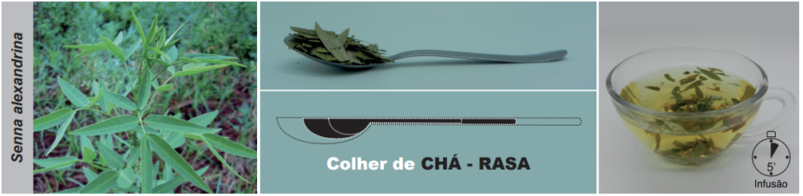
Fonte: PEREIRA, A.M.S. et al.; 202010.
Duração do uso
Evitar o uso prolongado. O uso contínuo pode causar constipação paradoxal4.
Apresentações comerciais
Apresentações industrializadas registradas na ANVISA podem ser consultadas no endereço a seguir: https://consultas.anvisa.gov.br/#/medicamentos/.
Advertências
Contraindicado para gestantes, lactantes, crianças menores de 12 anos, em casos de constipação
intestinal crônica, distúrbios intestinais, obstrução e estenose intestinal, atonia, doenças
inflamatórias intestinais e dores abdominais, desidratação grave, hemorroidas, apendicite,
hipocalemia, doença inflamatória pélvica, período menstrual, cistite, insuficiência hepática,
renal ou cardíaca. Efeitos adversos incluem desconforto no trato gastrointestinal, cólicas
abdominais, urina amarela escura ou marrom avermelhada (o que desaparece com a suspensão do uso),
diarreia (no início do tratamento), hipocalemia, hipermenorreia e baqueteamento digital (uso
prolongado). As antraquinonas podem pigmentar o cólon (pseudomelanosis coli), devendo seu uso ser
descontinuado um mês antes da realização de endoscopias digestivas baixas. Uso crônico ou
superdosagem podem causar diarreia, distúrbios hidroeletrolíticos, acidose ou alcalose metabólica,
albuminúria, hematúria, hipogamaglobulinemia, perda de peso, hipocalemia, tetania,
hiperaldosteronismo, excreção de aspartilglicosamina e nefrite. Além disso, dados conflitantes
sugerem que possam ocorrer alterações anatômicas do cólon e danos ao sistema nervoso do tecido
entérico. O uso concomitante de bloqueadores dos canais de cálcio, antagonistas da calmodulina ou
indometacina pode reduzir os efeitos laxativos. Evitar o uso concomitante com antiácidos. O aumento
do peristaltismo intestinal pode reduzir a absorção de fármacos administrados por via oral. Uso
concomitante com diuréticos pode aumentar o risco de desequilíbrios eletrolíticos. Pode haver
interação com nifedipina, indometacina e outros anti-inflamatórios não hormonais4. Pelo seu
teor de antraquinonas, pode interagir com medicamentos depletores de potássio, como corticosteroides e
alguns diuréticos, ou medicamentos para os quais a concentração de potássio é importante, como a
digoxina, mas há poucas evidências de que isto ocorra na prática2. Uma revisão da
literatura mostrou (a) que não há evidências de que o uso crônico de sene leve a alteração estrutural
ou funcional nos nervos entéricos ou na musculatura lisa intestinal; (b) que não há relação entre a
administração prolongada de extratos de sene e o surgimento de tumores gastrointestinais ou de
qualquer outro tipo, em ratos; (c) que o sene não é carcinogênico, em ratos, mesmo após dois anos
recebendo diariamente doses de até 300 mg/kg/dia; e (d) que as evidências atuais não mostram que haja
risco de genotoxicidade para pacientes que usam laxativos contendo extrato de sene ou
senosídeos6.
REFERÊNCIAS BIBLIOGRÁFICAS
1. Lorenzi H, Matos FJA. Plantas Medicinais no Brasil: Nativas e Exóticas. Nova Odessa: Instituto Plantarum; 2008.
2. POWO. Plants of the World Online. Facilitated by the Royal Botanic Gardens, Kew. Published on the Internet [Internet]. 2023 [citado 25 de dezembro de 2023]. Disponível em: http://www.plantsoftheworldonline.org/.
3. Saad G de A, Léda PH de O, Sá IM, Seixlack AC de C. Fitoterapia Contemporânea - Tradição e Ciência na Prática Clínica. 3. ed. Rio de Janeiro: Guanabara Koogan; 2021. 1–578 p.
4. Brasil. Memento Fitoterápico da Farmacopeia Brasileira. 1. ed. Brasília: Agência Nacional de Vigilância Sanitária (ANVISA); 2016. 115 p.
5. Gruenwald J, Brendler T, Jaenicke C. Physician’s Desk Reference (PDR) for Herbal Medicines. 4th ed. Connecticut: Thomson; 2007. 1034 p.
6. Morales MA, Hernández D, Bustamante S, Bachiller I, Rojas A. Is senna laxative use associated to cathartic colon, genotoxicity, or carcinogenicity? J Toxicol [Internet]. janeiro de 2009 [citado 7 de janeiro de 2015];2009:287247. Disponível em: http://www.pubmedcentral.nih.gov/articlerender.fcgi?artid=2809429&tool=pmcentrez&rendertype=abstract.
7. Patel M, Schimpf MO, O’Sullivan DM, LaSala CA. The use of senna with docusate for postoperative constipation after pelvic reconstructive surgery: a randomized, double-blind, placebo-controlled trial. Am J Obstet Gynecol [Internet]. maio de 2010 [citado 17 de janeiro de 2015];202(5):479.e1-5. Disponível em: http://www.ncbi.nlm.nih.gov/pubmed/20207340.
8. Isaia-Filho C, Jung LK, Mallmann IO, Sosan FF, Rocha AR da, Bueno PTB. Avaliação da eficácia terapêutica e tolerabilidade da composição de Cassia fistula e Senna alexandrina Miller em uma amostra de voluntários com constipação intestinal funcional crônica: estudo clínico randomizado com placebo. Rev Bras Med. 2014;262(267):71–8.
9. Khorasanynejad R, Norouzi A, Roshandel G, Besharat S. Bowel Preparation for a Better Colonoscopy Using Polyethylene Glycol or C-lax: A Double Blind Randomized Clinical Trial. Middle East J Dig Dis. 24 de agosto de 2017;9(4):212–7.
10. Pereira AMS, Bertoni BW, Silva CCM, Ferro D, Carmona F, Tardelli FC, et al. Formulário de Preparação Extemporânea da Farmácia da Natureza. 2. ed. São Paulo: Bertolucci; 2020. 263 p.
11. Pereira AMS, Bertoni BW, Silva CCM, Ferro D, Carmona F, Cestari IM, et al. Formulário Fitoterápico da Farmácia da Natureza. 3. ed. São Paulo: Bertolucci; 2020. 465 p.
12. Williamsom E, Driver S, Baxter K. Interações Medicamentosas de Stockley: plantas medicinais e medicamentos fitoterápicos. Porto Alegre: Artmed; 2012. 440 p.